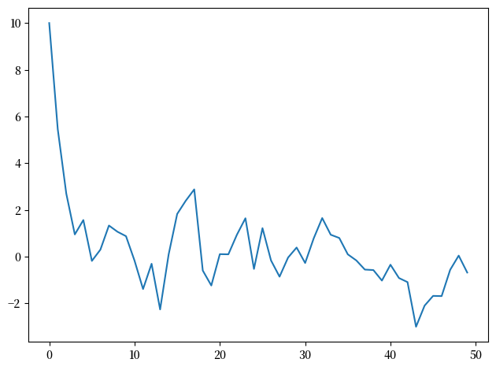
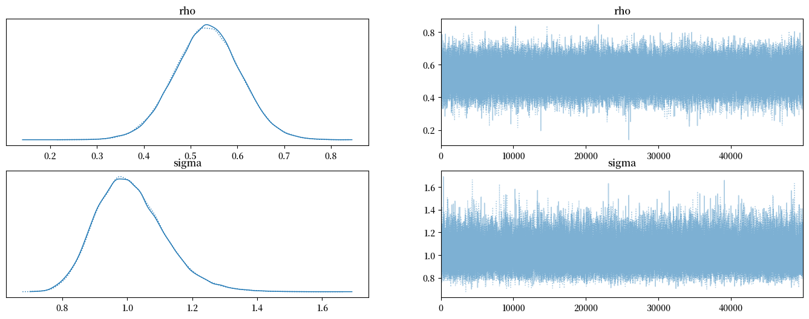
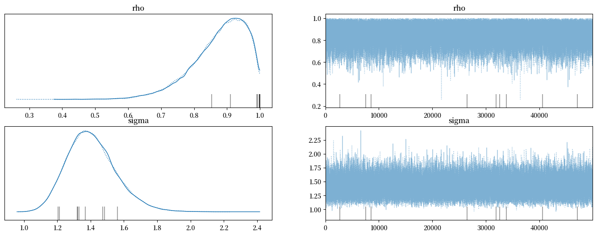
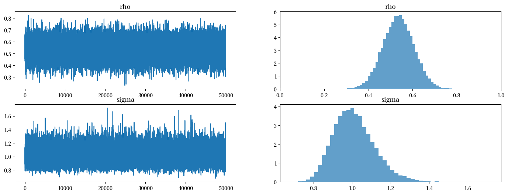
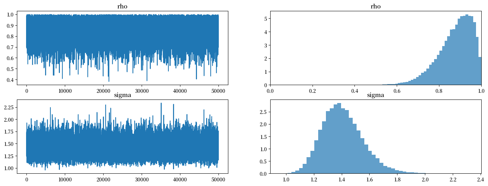

<!DOCTYPE html>


<html lang="en" data-content_root="" >

  <head>
    <meta charset="utf-8" />
    <meta name="viewport" content="width=device-width, initial-scale=1.0" /><meta name="generator" content="Docutils 0.17.1: http://docutils.sourceforge.net/" />

    <title>47. AR(1)参数的后验分布 &#8212; Python中级数量经济学</title>
    <script src="https://unpkg.com/@popperjs/core@2.9.2/dist/umd/popper.min.js"></script>
    <script src="https://unpkg.com/tippy.js@6.3.1/dist/tippy-bundle.umd.js"></script>
    <script src="https://cdn.jsdelivr.net/npm/feather-icons/dist/feather.min.js"></script>
    
        <script>
            MathJax = {
            loader: {load: ['[tex]/boldsymbol', '[tex]/textmacros']},
            tex: {
                packages: {'[+]': ['boldsymbol', 'textmacros']},
                inlineMath: [['$', '$'], ['\\(', '\\)']],
                processEscapes: true,
                macros: {
                    "argmax" : "arg\\,max",
                    "argmin" : "arg\\,min",
                    "col"    : "col",
                    "Span"   :  "span",
                    "epsilon": "\\varepsilon",
                    "EE": "\\mathbb{E}",
                    "PP": "\\mathbb{P}",
                    "RR": "\\mathbb{R}",
                    "NN": "\\mathbb{N}",
                    "ZZ": "\\mathbb{Z}",
                    "aA": "\\mathcal{A}",
                    "bB": "\\mathcal{B}",
                    "cC": "\\mathcal{C}",
                    "dD": "\\mathcal{D}",
                    "eE": "\\mathcal{E}",
                    "fF": "\\mathcal{F}",
                    "gG": "\\mathcal{G}",
                    "hH": "\\mathcal{H}",
                }
            },
            svg: {
                fontCache: 'global',
                scale: 0.92,
                displayAlign: "center",
            },
            };
        </script>
    
    
  
  
  
  <script data-cfasync="false">
    document.documentElement.dataset.mode = localStorage.getItem("mode") || "";
    document.documentElement.dataset.theme = localStorage.getItem("theme") || "";
  </script>
  
  <!-- Loaded before other Sphinx assets -->
  <link href="_static/styles/theme.css?digest=dfe6caa3a7d634c4db9b" rel="stylesheet" />
<link href="_static/styles/bootstrap.css?digest=dfe6caa3a7d634c4db9b" rel="stylesheet" />
<link href="_static/styles/pydata-sphinx-theme.css?digest=dfe6caa3a7d634c4db9b" rel="stylesheet" />

  
  <link href="_static/vendor/fontawesome/6.5.2/css/all.min.css?digest=dfe6caa3a7d634c4db9b" rel="stylesheet" />
  <link rel="preload" as="font" type="font/woff2" crossorigin href="_static/vendor/fontawesome/6.5.2/webfonts/fa-solid-900.woff2" />
<link rel="preload" as="font" type="font/woff2" crossorigin href="_static/vendor/fontawesome/6.5.2/webfonts/fa-brands-400.woff2" />
<link rel="preload" as="font" type="font/woff2" crossorigin href="_static/vendor/fontawesome/6.5.2/webfonts/fa-regular-400.woff2" />

    <link rel="stylesheet" type="text/css" href="_static/pygments.css" />
    <link rel="stylesheet" href="_static/styles/quantecon-book-theme.css?digest=bd0785fbb14d8d2bd4d9ae501d79ed8d3bc089ec" type="text/css" />
    <link rel="stylesheet" type="text/css" href="_static/togglebutton.css" />
    <link rel="stylesheet" type="text/css" href="_static/copybutton.css" />
    <link rel="stylesheet" type="text/css" href="_static/mystnb.4510f1fc1dee50b3e5859aac5469c37c29e427902b24a333a5f9fcb2f0b3ac41.css" />
    <link rel="stylesheet" type="text/css" href="_static/sphinx-thebe.css" />
    <link rel="stylesheet" type="text/css" href="_static/exercise.css" />
    <link rel="stylesheet" type="text/css" href="_static/proof.css" />
    <link rel="stylesheet" type="text/css" href="_static/sphinx-design.5ea377869091fd0449014c60fc090103.min.css" />
  
  <!-- Pre-loaded scripts that we'll load fully later -->
  <link rel="preload" as="script" href="_static/scripts/bootstrap.js?digest=dfe6caa3a7d634c4db9b" />
<link rel="preload" as="script" href="_static/scripts/pydata-sphinx-theme.js?digest=dfe6caa3a7d634c4db9b" />
  <script src="_static/vendor/fontawesome/6.5.2/js/all.min.js?digest=dfe6caa3a7d634c4db9b"></script>


    <script data-url_root="./" id="documentation_options" src="_static/documentation_options.js"></script>
    <script src="_static/jquery.js"></script>
    <script src="_static/underscore.js"></script>
    <script src="_static/_sphinx_javascript_frameworks_compat.js"></script>
    <script src="_static/doctools.js"></script>
    <script src="_static/sphinx_highlight.js"></script>
    <script src="_static/clipboard.min.js"></script>
    <script src="_static/copybutton.js"></script>
    <script src="_static/scripts/sphinx-book-theme.js"></script>
    <script>let toggleHintShow = 'Click to show';</script>
    <script>let toggleHintHide = 'Click to hide';</script>
    <script>let toggleOpenOnPrint = 'true';</script>
    <script src="_static/togglebutton.js"></script>
    <script src="_static/scripts/quantecon-book-theme.js?digest=d9faaf6c4b57726f74ba012412af1f5681bdff87"></script>
    <script>var togglebuttonSelector = '.toggle, .admonition.dropdown';</script>
    <script src="_static/design-tabs.js"></script>
    <script async="async" src="https://www.googletagmanager.com/gtag/js?id=G-J0SMYR4SG3"></script>
    <script>
                window.dataLayer = window.dataLayer || [];
                function gtag(){ dataLayer.push(arguments); }
                gtag('js', new Date());
                gtag('config', 'G-J0SMYR4SG3');
            </script>
    <script>const THEBE_JS_URL = "https://unpkg.com/thebe@0.8.2/lib/index.js"; const thebe_selector = ".thebe,.cell"; const thebe_selector_input = "pre"; const thebe_selector_output = ".output, .cell_output"</script>
    <script async="async" src="_static/sphinx-thebe.js"></script>
    <script>window.MathJax = {"tex": {"macros": {"argmax": "arg\\,max", "argmin": "arg\\,min"}}, "options": {"processHtmlClass": "tex2jax_process|mathjax_process|math|output_area"}}</script>
    <script defer="defer" src="https://cdn.jsdelivr.net/npm/mathjax@3/es5/tex-mml-chtml.js"></script>
    <script type="application/vnd.jupyter.widget-state+json">{"state": {"0828a5c05aba4972a94f2d4e9b6b1733": {"model_module": "@jupyter-widgets/base", "model_module_version": "1.2.0", "model_name": "LayoutModel", "state": {"_model_module": "@jupyter-widgets/base", "_model_module_version": "1.2.0", "_model_name": "LayoutModel", "_view_count": null, "_view_module": "@jupyter-widgets/base", "_view_module_version": "1.2.0", "_view_name": "LayoutView", "align_content": null, "align_items": null, "align_self": null, "border": null, "bottom": null, "display": null, "flex": null, "flex_flow": null, "grid_area": null, "grid_auto_columns": null, "grid_auto_flow": null, "grid_auto_rows": null, "grid_column": null, "grid_gap": null, "grid_row": null, "grid_template_areas": null, "grid_template_columns": null, "grid_template_rows": null, "height": null, "justify_content": null, "justify_items": null, "left": null, "margin": null, "max_height": null, "max_width": null, "min_height": null, "min_width": null, "object_fit": null, "object_position": null, "order": null, "overflow": null, "overflow_x": null, "overflow_y": null, "padding": null, "right": null, "top": null, "visibility": null, "width": null}}, "128d536f749f417a8eecc1df808bdd6b": {"model_module": "@jupyter-widgets/base", "model_module_version": "1.2.0", "model_name": "LayoutModel", "state": {"_model_module": "@jupyter-widgets/base", "_model_module_version": "1.2.0", "_model_name": "LayoutModel", "_view_count": null, "_view_module": "@jupyter-widgets/base", "_view_module_version": "1.2.0", "_view_name": "LayoutView", "align_content": null, "align_items": null, "align_self": null, "border": null, "bottom": null, "display": null, "flex": null, "flex_flow": null, "grid_area": null, "grid_auto_columns": null, "grid_auto_flow": null, "grid_auto_rows": null, "grid_column": null, "grid_gap": null, "grid_row": null, "grid_template_areas": null, "grid_template_columns": null, "grid_template_rows": null, "height": null, "justify_content": null, "justify_items": null, "left": null, "margin": null, "max_height": null, "max_width": null, "min_height": null, "min_width": null, "object_fit": null, "object_position": null, "order": null, "overflow": null, "overflow_x": null, "overflow_y": null, "padding": null, "right": null, "top": null, "visibility": null, "width": null}}, "7afed51fe4564088bdd83ae351cc4221": {"model_module": "@jupyter-widgets/output", "model_module_version": "1.0.0", "model_name": "OutputModel", "state": {"_dom_classes": [], "_model_module": "@jupyter-widgets/output", "_model_module_version": "1.0.0", "_model_name": "OutputModel", "_view_count": null, "_view_module": "@jupyter-widgets/output", "_view_module_version": "1.0.0", "_view_name": "OutputView", "layout": "IPY_MODEL_128d536f749f417a8eecc1df808bdd6b", "msg_id": "", "outputs": [{"data": {"text/html": "<pre style=\"white-space:pre;overflow-x:auto;line-height:normal;font-family:Menlo,'DejaVu Sans Mono',consolas,'Courier New',monospace\">                                                                                                                   \n <span style=\"font-weight: bold\"> Progress                 </span> <span style=\"font-weight: bold\"> Draws </span> <span style=\"font-weight: bold\"> Divergences </span> <span style=\"font-weight: bold\"> Step size </span> <span style=\"font-weight: bold\"> Grad evals </span> <span style=\"font-weight: bold\"> Sampling Speed  </span> <span style=\"font-weight: bold\"> Elapsed </span> <span style=\"font-weight: bold\"> Remaining </span> \n \u2500\u2500\u2500\u2500\u2500\u2500\u2500\u2500\u2500\u2500\u2500\u2500\u2500\u2500\u2500\u2500\u2500\u2500\u2500\u2500\u2500\u2500\u2500\u2500\u2500\u2500\u2500\u2500\u2500\u2500\u2500\u2500\u2500\u2500\u2500\u2500\u2500\u2500\u2500\u2500\u2500\u2500\u2500\u2500\u2500\u2500\u2500\u2500\u2500\u2500\u2500\u2500\u2500\u2500\u2500\u2500\u2500\u2500\u2500\u2500\u2500\u2500\u2500\u2500\u2500\u2500\u2500\u2500\u2500\u2500\u2500\u2500\u2500\u2500\u2500\u2500\u2500\u2500\u2500\u2500\u2500\u2500\u2500\u2500\u2500\u2500\u2500\u2500\u2500\u2500\u2500\u2500\u2500\u2500\u2500\u2500\u2500\u2500\u2500\u2500\u2500\u2500\u2500\u2500\u2500\u2500\u2500\u2500\u2500\u2500\u2500\u2500\u2500 \n  <span style=\"color: #1f77b4; text-decoration-color: #1f77b4\">\u2501\u2501\u2501\u2501\u2501\u2501\u2501\u2501\u2501\u2501\u2501\u2501\u2501\u2501\u2501\u2501\u2501\u2501\u2501\u2501\u2501\u2501\u2501\u2501</span>   60000   0             1.31        3            2572.13 draws/s   0:00:23   0:00:00    \n  <span style=\"color: #1f77b4; text-decoration-color: #1f77b4\">\u2501\u2501\u2501\u2501\u2501\u2501\u2501\u2501\u2501\u2501\u2501\u2501\u2501\u2501\u2501\u2501\u2501\u2501\u2501\u2501\u2501\u2501\u2501\u2501</span>   60000   0             1.27        3            2593.97 draws/s   0:00:23   0:00:00    \n                                                                                                                   \n</pre>\n", "text/plain": "                                                                                                                   \n \u001b[1m \u001b[0m\u001b[1mProgress                \u001b[0m\u001b[1m \u001b[0m \u001b[1m \u001b[0m\u001b[1mDraws\u001b[0m\u001b[1m \u001b[0m \u001b[1m \u001b[0m\u001b[1mDivergences\u001b[0m\u001b[1m \u001b[0m \u001b[1m \u001b[0m\u001b[1mStep size\u001b[0m\u001b[1m \u001b[0m \u001b[1m \u001b[0m\u001b[1mGrad evals\u001b[0m\u001b[1m \u001b[0m \u001b[1m \u001b[0m\u001b[1mSampling Speed \u001b[0m\u001b[1m \u001b[0m \u001b[1m \u001b[0m\u001b[1mElapsed\u001b[0m\u001b[1m \u001b[0m \u001b[1m \u001b[0m\u001b[1mRemaining\u001b[0m\u001b[1m \u001b[0m \n \u2500\u2500\u2500\u2500\u2500\u2500\u2500\u2500\u2500\u2500\u2500\u2500\u2500\u2500\u2500\u2500\u2500\u2500\u2500\u2500\u2500\u2500\u2500\u2500\u2500\u2500\u2500\u2500\u2500\u2500\u2500\u2500\u2500\u2500\u2500\u2500\u2500\u2500\u2500\u2500\u2500\u2500\u2500\u2500\u2500\u2500\u2500\u2500\u2500\u2500\u2500\u2500\u2500\u2500\u2500\u2500\u2500\u2500\u2500\u2500\u2500\u2500\u2500\u2500\u2500\u2500\u2500\u2500\u2500\u2500\u2500\u2500\u2500\u2500\u2500\u2500\u2500\u2500\u2500\u2500\u2500\u2500\u2500\u2500\u2500\u2500\u2500\u2500\u2500\u2500\u2500\u2500\u2500\u2500\u2500\u2500\u2500\u2500\u2500\u2500\u2500\u2500\u2500\u2500\u2500\u2500\u2500\u2500\u2500\u2500\u2500\u2500\u2500 \n  \u001b[38;2;31;119;180m\u2501\u2501\u2501\u2501\u2501\u2501\u2501\u2501\u2501\u2501\u2501\u2501\u2501\u2501\u2501\u2501\u2501\u2501\u2501\u2501\u2501\u2501\u2501\u2501\u001b[0m   60000   0             1.31        3            2572.13 draws/s   0:00:23   0:00:00    \n  \u001b[38;2;31;119;180m\u2501\u2501\u2501\u2501\u2501\u2501\u2501\u2501\u2501\u2501\u2501\u2501\u2501\u2501\u2501\u2501\u2501\u2501\u2501\u2501\u2501\u2501\u2501\u2501\u001b[0m   60000   0             1.27        3            2593.97 draws/s   0:00:23   0:00:00    \n                                                                                                                   \n"}, "metadata": {}, "output_type": "display_data"}]}}, "ad293c04662147e5a7115007618bfff9": {"model_module": "@jupyter-widgets/output", "model_module_version": "1.0.0", "model_name": "OutputModel", "state": {"_dom_classes": [], "_model_module": "@jupyter-widgets/output", "_model_module_version": "1.0.0", "_model_name": "OutputModel", "_view_count": null, "_view_module": "@jupyter-widgets/output", "_view_module_version": "1.0.0", "_view_name": "OutputView", "layout": "IPY_MODEL_0828a5c05aba4972a94f2d4e9b6b1733", "msg_id": "", "outputs": [{"data": {"text/html": "<pre style=\"white-space:pre;overflow-x:auto;line-height:normal;font-family:Menlo,'DejaVu Sans Mono',consolas,'Courier New',monospace\">                                                                                                                   \n <span style=\"font-weight: bold\"> Progress                 </span> <span style=\"font-weight: bold\"> Draws </span> <span style=\"font-weight: bold\"> Divergences </span> <span style=\"font-weight: bold\"> Step size </span> <span style=\"font-weight: bold\"> Grad evals </span> <span style=\"font-weight: bold\"> Sampling Speed  </span> <span style=\"font-weight: bold\"> Elapsed </span> <span style=\"font-weight: bold\"> Remaining </span> \n \u2500\u2500\u2500\u2500\u2500\u2500\u2500\u2500\u2500\u2500\u2500\u2500\u2500\u2500\u2500\u2500\u2500\u2500\u2500\u2500\u2500\u2500\u2500\u2500\u2500\u2500\u2500\u2500\u2500\u2500\u2500\u2500\u2500\u2500\u2500\u2500\u2500\u2500\u2500\u2500\u2500\u2500\u2500\u2500\u2500\u2500\u2500\u2500\u2500\u2500\u2500\u2500\u2500\u2500\u2500\u2500\u2500\u2500\u2500\u2500\u2500\u2500\u2500\u2500\u2500\u2500\u2500\u2500\u2500\u2500\u2500\u2500\u2500\u2500\u2500\u2500\u2500\u2500\u2500\u2500\u2500\u2500\u2500\u2500\u2500\u2500\u2500\u2500\u2500\u2500\u2500\u2500\u2500\u2500\u2500\u2500\u2500\u2500\u2500\u2500\u2500\u2500\u2500\u2500\u2500\u2500\u2500\u2500\u2500\u2500\u2500\u2500\u2500 \n  <span style=\"color: #d62728; text-decoration-color: #d62728\">\u2501\u2501\u2501\u2501\u2501\u2501\u2501\u2501\u2501\u2501\u2501\u2501\u2501\u2501\u2501\u2501\u2501\u2501\u2501\u2501\u2501\u2501\u2501\u2501</span>   60000   6             0.69        1            2387.07 draws/s   0:00:25   0:00:00    \n  <span style=\"color: #d62728; text-decoration-color: #d62728\">\u2501\u2501\u2501\u2501\u2501\u2501\u2501\u2501\u2501\u2501\u2501\u2501\u2501\u2501\u2501\u2501\u2501\u2501\u2501\u2501\u2501\u2501\u2501\u2501</span>   60000   3             0.76        1            2367.67 draws/s   0:00:25   0:00:00    \n                                                                                                                   \n</pre>\n", "text/plain": "                                                                                                                   \n \u001b[1m \u001b[0m\u001b[1mProgress                \u001b[0m\u001b[1m \u001b[0m \u001b[1m \u001b[0m\u001b[1mDraws\u001b[0m\u001b[1m \u001b[0m \u001b[1m \u001b[0m\u001b[1mDivergences\u001b[0m\u001b[1m \u001b[0m \u001b[1m \u001b[0m\u001b[1mStep size\u001b[0m\u001b[1m \u001b[0m \u001b[1m \u001b[0m\u001b[1mGrad evals\u001b[0m\u001b[1m \u001b[0m \u001b[1m \u001b[0m\u001b[1mSampling Speed \u001b[0m\u001b[1m \u001b[0m \u001b[1m \u001b[0m\u001b[1mElapsed\u001b[0m\u001b[1m \u001b[0m \u001b[1m \u001b[0m\u001b[1mRemaining\u001b[0m\u001b[1m \u001b[0m \n \u2500\u2500\u2500\u2500\u2500\u2500\u2500\u2500\u2500\u2500\u2500\u2500\u2500\u2500\u2500\u2500\u2500\u2500\u2500\u2500\u2500\u2500\u2500\u2500\u2500\u2500\u2500\u2500\u2500\u2500\u2500\u2500\u2500\u2500\u2500\u2500\u2500\u2500\u2500\u2500\u2500\u2500\u2500\u2500\u2500\u2500\u2500\u2500\u2500\u2500\u2500\u2500\u2500\u2500\u2500\u2500\u2500\u2500\u2500\u2500\u2500\u2500\u2500\u2500\u2500\u2500\u2500\u2500\u2500\u2500\u2500\u2500\u2500\u2500\u2500\u2500\u2500\u2500\u2500\u2500\u2500\u2500\u2500\u2500\u2500\u2500\u2500\u2500\u2500\u2500\u2500\u2500\u2500\u2500\u2500\u2500\u2500\u2500\u2500\u2500\u2500\u2500\u2500\u2500\u2500\u2500\u2500\u2500\u2500\u2500\u2500\u2500\u2500 \n  \u001b[38;2;214;39;40m\u2501\u2501\u2501\u2501\u2501\u2501\u2501\u2501\u2501\u2501\u2501\u2501\u2501\u2501\u2501\u2501\u2501\u2501\u2501\u2501\u2501\u2501\u2501\u2501\u001b[0m   60000   6             0.69        1            2387.07 draws/s   0:00:25   0:00:00    \n  \u001b[38;2;214;39;40m\u2501\u2501\u2501\u2501\u2501\u2501\u2501\u2501\u2501\u2501\u2501\u2501\u2501\u2501\u2501\u2501\u2501\u2501\u2501\u2501\u2501\u2501\u2501\u2501\u001b[0m   60000   3             0.76        1            2367.67 draws/s   0:00:25   0:00:00    \n                                                                                                                   \n"}, "metadata": {}, "output_type": "display_data"}]}}}, "version_major": 2, "version_minor": 0}</script>
    <script crossorigin="anonymous" integrity="sha256-Ae2Vz/4ePdIu6ZyI/5ZGsYnb+m0JlOmKPjt6XZ9JJkA=" src="https://cdnjs.cloudflare.com/ajax/libs/require.js/2.3.4/require.min.js"></script>
    <script crossorigin="anonymous" data-jupyter-widgets-cdn="https://cdn.jsdelivr.net/npm/" src="https://cdn.jsdelivr.net/npm/@jupyter-widgets/html-manager@1.0.6/dist/embed-amd.js"></script>
    <script>DOCUMENTATION_OPTIONS.pagename = 'ar1_bayes';</script>
    <link rel="canonical" href="https://python.quantecon-zh-cn.org/ar1_bayes.html" />
    <link rel="shortcut icon" href="_static/lectures-favicon.ico"/>
    <link rel="index" title="Index" href="genindex.html" />
    <link rel="search" title="Search" href="search.html" />
    <link rel="next" title="48. 预测 AR(1) 过程" href="ar1_turningpts.html" />
    <link rel="prev" title="46. 非共轭先验" href="bayes_nonconj.html" />

<!-- Normal Meta Tags -->
<meta name="author" context="Thomas J. Sargent &amp; John Stachurski" />
<meta name="keywords" content="Python, QuantEcon, Quantitative Economics, Economics, Sloan, Alfred P. Sloan Foundation, Tom J. Sargent, John Stachurski" />
<meta name="description" content=本课程是由托马斯·萨金特（Thomas J. Sargent）和约翰·斯塔胡斯基（John Stachurski）设计和编写的数量经济建模讲座。 />

<!-- Twitter tags -->
<meta name="twitter:card" content="summary" />
<meta name="twitter:site" content="@quantecon" />
<meta name="twitter:title" content="AR(1)参数的后验分布"/>
<meta name="twitter:description" content="本课程是由托马斯·萨金特（Thomas J. Sargent）和约翰·斯塔胡斯基（John Stachurski）设计和编写的数量经济建模讲座。">
<meta name="twitter:creator" content="@quantecon">
<meta name="twitter:image" content="https://assets.quantecon.org/img/qe-twitter-logo.png">

<!-- Opengraph tags -->
<meta property="og:title" content="AR(1)参数的后验分布" />
<meta property="og:type" content="website" />
<meta property="og:url" content="https://python.quantecon-zh-cn.org/ar1_bayes.html" />
<meta property="og:image" content="https://assets.quantecon.org/img/qe-og-logo.png" />
<meta property="og:description" content="本课程是由托马斯·萨金特（Thomas J. Sargent）和约翰·斯塔胡斯基（John Stachurski）设计和编写的数量经济建模讲座。" />
<meta property="og:site_name" content="Python中级数量经济学" />
<meta name="theme-color" content="#ffffff" />

  </head>
<body>

<!-- Override QuantEcon theme colors -->

    <span id="top"></span>

    <div class="qe-wrapper">

        <div class="qe-main">

            <div class="qe-page" id=ar1_bayes>

                <div class="qe-page__toc">

                    <div class="inner">

                        
                        <div class="qe-page__toc-header">
                            On this page
                        </div>


                        <nav id="bd-toc-nav" class="qe-page__toc-nav">
                            <ul class="visible nav section-nav flex-column">
<li class="toc-h2 nav-item toc-entry"><a class="reference internal nav-link" href="#pymc">47.1. PyMC实现</a></li>
<li class="toc-h2 nav-item toc-entry"><a class="reference internal nav-link" href="#numpyro">47.2. Numpyro实现</a></li>
</ul>
                            <p class="logo">
                                
                                    
                                    <a href=https://quantecon.org></a>
                                    
                                    
                                
                            </p>

                            <p class="powered">Powered by <a href="https://jupyterbook.org/">Jupyter Book</a></p>

                        </nav>

                        <div class="qe-page__toc-footer">
                            
                            
                            <p><a href="#top"><strong>Back to top</strong></a></p>
                        </div>

                    </div>

                </div>

                <div class="qe-page__header">

                    <div class="qe-page__header-copy">

                        <p class="qe-page__header-heading"><a href="intro.html">Python中级数量经济学</a></p>

                        <p class="qe-page__header-subheading">AR(1)参数的后验分布</p>

                    </div>
                    <!-- length 2, since its a string and empty dict has length 2 - {} -->
                        <p class="qe-page__header-authors" font-size="18">
                            
                                
                                    <a href="http://www.tomsargent.com/" target="_blank"><span>托马斯·萨金特（Thomas J. Sargent）</span></a>
                                
                            
                                
                                    and <a href="https://johnstachurski.net/" target="_blank"><span>约翰·斯塔胡斯基（John Stachurski）</span></a>
                                
                            
                        </p>


                </div> <!-- .page__header -->


                
                <main class="qe-page__content" role="main">
                    
                    <div>
                        
  <section class="tex2jax_ignore mathjax_ignore" id="ar-1">
<h1><span class="section-number">47. </span>AR(1)参数的后验分布<a class="headerlink" href="#ar-1" title="Permalink to this heading">#</a></h1>
<p>我们先从导入一些Python包开始。</p>
<div class="cell tag_hide-output docutils container">
<div class="cell_input above-output-prompt docutils container">
<div class="highlight-ipython3 notranslate"><div class="highlight"><pre><span></span><span class="o">!</span>pip<span class="w"> </span>install<span class="w"> </span>arviz<span class="w"> </span>pymc<span class="w"> </span>numpyro<span class="w"> </span>jax
</pre></div>
</div>
</div>
<details class="hide below-input">
<summary aria-label="Toggle hidden content">
<span class="collapsed">Show code cell output</span>
<span class="expanded">Hide code cell output</span>
</summary>
<div class="cell_output docutils container">
<div class="output stream highlight-myst-ansi notranslate"><div class="highlight"><pre><span></span>Collecting arviz
</pre></div>
</div>
<div class="output stream highlight-myst-ansi notranslate"><div class="highlight"><pre><span></span>  Downloading arviz-0.21.0-py3-none-any.whl.metadata (8.8 kB)
Collecting pymc
  Downloading pymc-5.23.0-py3-none-any.whl.metadata (16 kB)
</pre></div>
</div>
<div class="output stream highlight-myst-ansi notranslate"><div class="highlight"><pre><span></span>Collecting numpyro
  Downloading numpyro-0.18.0-py3-none-any.whl.metadata (37 kB)
</pre></div>
</div>
<div class="output stream highlight-myst-ansi notranslate"><div class="highlight"><pre><span></span>Collecting jax
  Downloading jax-0.6.1-py3-none-any.whl.metadata (13 kB)
Requirement already satisfied: setuptools&gt;=60.0.0 in /home/runner/miniconda3/envs/quantecon/lib/python3.12/site-packages (from arviz) (75.1.0)
Requirement already satisfied: matplotlib&gt;=3.5 in /home/runner/miniconda3/envs/quantecon/lib/python3.12/site-packages (from arviz) (3.9.2)
Requirement already satisfied: numpy&gt;=1.23.0 in /home/runner/miniconda3/envs/quantecon/lib/python3.12/site-packages (from arviz) (1.26.4)
Requirement already satisfied: scipy&gt;=1.9.0 in /home/runner/miniconda3/envs/quantecon/lib/python3.12/site-packages (from arviz) (1.13.1)
Requirement already satisfied: packaging in /home/runner/miniconda3/envs/quantecon/lib/python3.12/site-packages (from arviz) (24.1)
Requirement already satisfied: pandas&gt;=1.5.0 in /home/runner/miniconda3/envs/quantecon/lib/python3.12/site-packages (from arviz) (2.2.2)
Requirement already satisfied: xarray&gt;=2022.6.0 in /home/runner/miniconda3/envs/quantecon/lib/python3.12/site-packages (from arviz) (2023.6.0)
Collecting h5netcdf&gt;=1.0.2 (from arviz)
  Downloading h5netcdf-1.6.1-py3-none-any.whl.metadata (13 kB)
Requirement already satisfied: typing-extensions&gt;=4.1.0 in /home/runner/miniconda3/envs/quantecon/lib/python3.12/site-packages (from arviz) (4.11.0)
</pre></div>
</div>
<div class="output stream highlight-myst-ansi notranslate"><div class="highlight"><pre><span></span>Collecting xarray-einstats&gt;=0.3 (from arviz)
  Downloading xarray_einstats-0.9.0-py3-none-any.whl.metadata (5.9 kB)
Requirement already satisfied: cachetools&gt;=4.2.1 in /home/runner/miniconda3/envs/quantecon/lib/python3.12/site-packages (from pymc) (5.3.3)
Requirement already satisfied: cloudpickle in /home/runner/miniconda3/envs/quantecon/lib/python3.12/site-packages (from pymc) (3.0.0)
</pre></div>
</div>
<div class="output stream highlight-myst-ansi notranslate"><div class="highlight"><pre><span></span>Collecting pytensor&lt;2.32,&gt;=2.31.2 (from pymc)
  Downloading pytensor-2.31.2-cp312-cp312-manylinux_2_17_x86_64.manylinux2014_x86_64.whl.metadata (6.9 kB)
Requirement already satisfied: rich&gt;=13.7.1 in /home/runner/miniconda3/envs/quantecon/lib/python3.12/site-packages (from pymc) (13.7.1)
Requirement already satisfied: threadpoolctl&lt;4.0.0,&gt;=3.1.0 in /home/runner/miniconda3/envs/quantecon/lib/python3.12/site-packages (from pymc) (3.5.0)
</pre></div>
</div>
<div class="output stream highlight-myst-ansi notranslate"><div class="highlight"><pre><span></span>Collecting jaxlib&gt;=0.4.25 (from numpyro)
  Downloading jaxlib-0.6.1-cp312-cp312-manylinux2014_x86_64.whl.metadata (1.2 kB)
Requirement already satisfied: multipledispatch in /home/runner/miniconda3/envs/quantecon/lib/python3.12/site-packages (from numpyro) (0.6.0)
Requirement already satisfied: tqdm in /home/runner/miniconda3/envs/quantecon/lib/python3.12/site-packages (from numpyro) (4.66.5)
Collecting ml_dtypes&gt;=0.5.0 (from jax)
  Downloading ml_dtypes-0.5.1-cp312-cp312-manylinux_2_17_x86_64.manylinux2014_x86_64.whl.metadata (21 kB)
</pre></div>
</div>
<div class="output stream highlight-myst-ansi notranslate"><div class="highlight"><pre><span></span>Collecting opt_einsum (from jax)
  Downloading opt_einsum-3.4.0-py3-none-any.whl.metadata (6.3 kB)
Requirement already satisfied: h5py in /home/runner/miniconda3/envs/quantecon/lib/python3.12/site-packages (from h5netcdf&gt;=1.0.2-&gt;arviz) (3.11.0)
Requirement already satisfied: contourpy&gt;=1.0.1 in /home/runner/miniconda3/envs/quantecon/lib/python3.12/site-packages (from matplotlib&gt;=3.5-&gt;arviz) (1.2.0)
Requirement already satisfied: cycler&gt;=0.10 in /home/runner/miniconda3/envs/quantecon/lib/python3.12/site-packages (from matplotlib&gt;=3.5-&gt;arviz) (0.11.0)
Requirement already satisfied: fonttools&gt;=4.22.0 in /home/runner/miniconda3/envs/quantecon/lib/python3.12/site-packages (from matplotlib&gt;=3.5-&gt;arviz) (4.51.0)
Requirement already satisfied: kiwisolver&gt;=1.3.1 in /home/runner/miniconda3/envs/quantecon/lib/python3.12/site-packages (from matplotlib&gt;=3.5-&gt;arviz) (1.4.4)
Requirement already satisfied: pillow&gt;=8 in /home/runner/miniconda3/envs/quantecon/lib/python3.12/site-packages (from matplotlib&gt;=3.5-&gt;arviz) (10.4.0)
Requirement already satisfied: pyparsing&gt;=2.3.1 in /home/runner/miniconda3/envs/quantecon/lib/python3.12/site-packages (from matplotlib&gt;=3.5-&gt;arviz) (3.1.2)
Requirement already satisfied: python-dateutil&gt;=2.7 in /home/runner/miniconda3/envs/quantecon/lib/python3.12/site-packages (from matplotlib&gt;=3.5-&gt;arviz) (2.9.0.post0)
Requirement already satisfied: pytz&gt;=2020.1 in /home/runner/miniconda3/envs/quantecon/lib/python3.12/site-packages (from pandas&gt;=1.5.0-&gt;arviz) (2024.1)
Requirement already satisfied: tzdata&gt;=2022.7 in /home/runner/miniconda3/envs/quantecon/lib/python3.12/site-packages (from pandas&gt;=1.5.0-&gt;arviz) (2023.3)
</pre></div>
</div>
<div class="output stream highlight-myst-ansi notranslate"><div class="highlight"><pre><span></span>Collecting filelock&gt;=3.15 (from pytensor&lt;2.32,&gt;=2.31.2-&gt;pymc)
  Downloading filelock-3.18.0-py3-none-any.whl.metadata (2.9 kB)
Collecting etuples (from pytensor&lt;2.32,&gt;=2.31.2-&gt;pymc)
  Downloading etuples-0.3.9.tar.gz (30 kB)
</pre></div>
</div>
<div class="output stream highlight-myst-ansi notranslate"><div class="highlight"><pre><span></span>  Preparing metadata (setup.py) ... ?25l-
</pre></div>
</div>
<div class="output stream highlight-myst-ansi notranslate"><div class="highlight"><pre><span></span> done
?25hCollecting logical-unification (from pytensor&lt;2.32,&gt;=2.31.2-&gt;pymc)
</pre></div>
</div>
<div class="output stream highlight-myst-ansi notranslate"><div class="highlight"><pre><span></span>  Downloading logical-unification-0.4.6.tar.gz (31 kB)
</pre></div>
</div>
<div class="output stream highlight-myst-ansi notranslate"><div class="highlight"><pre><span></span>  Preparing metadata (setup.py) ... ?25l-
</pre></div>
</div>
<div class="output stream highlight-myst-ansi notranslate"><div class="highlight"><pre><span></span> done
?25hCollecting miniKanren (from pytensor&lt;2.32,&gt;=2.31.2-&gt;pymc)
  Downloading miniKanren-1.0.3.tar.gz (41 kB)
</pre></div>
</div>
<div class="output stream highlight-myst-ansi notranslate"><div class="highlight"><pre><span></span>  Preparing metadata (setup.py) ... ?25l-
</pre></div>
</div>
<div class="output stream highlight-myst-ansi notranslate"><div class="highlight"><pre><span></span> \ done
</pre></div>
</div>
<div class="output stream highlight-myst-ansi notranslate"><div class="highlight"><pre><span></span>?25hCollecting cons (from pytensor&lt;2.32,&gt;=2.31.2-&gt;pymc)
  Downloading cons-0.4.6.tar.gz (26 kB)
</pre></div>
</div>
<div class="output stream highlight-myst-ansi notranslate"><div class="highlight"><pre><span></span>  Preparing metadata (setup.py) ... ?25l-
</pre></div>
</div>
<div class="output stream highlight-myst-ansi notranslate"><div class="highlight"><pre><span></span> \ done
</pre></div>
</div>
<div class="output stream highlight-myst-ansi notranslate"><div class="highlight"><pre><span></span>?25hRequirement already satisfied: markdown-it-py&gt;=2.2.0 in /home/runner/miniconda3/envs/quantecon/lib/python3.12/site-packages (from rich&gt;=13.7.1-&gt;pymc) (2.2.0)
Requirement already satisfied: pygments&lt;3.0.0,&gt;=2.13.0 in /home/runner/miniconda3/envs/quantecon/lib/python3.12/site-packages (from rich&gt;=13.7.1-&gt;pymc) (2.15.1)
Requirement already satisfied: six in /home/runner/miniconda3/envs/quantecon/lib/python3.12/site-packages (from multipledispatch-&gt;numpyro) (1.16.0)
Requirement already satisfied: mdurl~=0.1 in /home/runner/miniconda3/envs/quantecon/lib/python3.12/site-packages (from markdown-it-py&gt;=2.2.0-&gt;rich&gt;=13.7.1-&gt;pymc) (0.1.0)
Requirement already satisfied: toolz in /home/runner/miniconda3/envs/quantecon/lib/python3.12/site-packages (from logical-unification-&gt;pytensor&lt;2.32,&gt;=2.31.2-&gt;pymc) (0.12.0)
</pre></div>
</div>
<div class="output stream highlight-myst-ansi notranslate"><div class="highlight"><pre><span></span>Downloading arviz-0.21.0-py3-none-any.whl (1.7 MB)
?25l   ━━━━━━━━━━━━━━━━━━━━━━━━━━━━━━━━━━━━━━━━ <span class=" -Color -Color-Green">0.0/1.7 MB</span> <span class=" -Color -Color-Red">?</span> eta <span class=" -Color -Color-Cyan">-:--:--</span>
   ━━━━━━━━━━━━━━━━━━━━━━━━━━━━━━━━━━━━━━━━ <span class=" -Color -Color-Green">1.7/1.7 MB</span> <span class=" -Color -Color-Red">109.2 MB/s</span> eta <span class=" -Color -Color-Cyan">0:00:00</span>
?25hDownloading pymc-5.23.0-py3-none-any.whl (519 kB)
Downloading numpyro-0.18.0-py3-none-any.whl (365 kB)
</pre></div>
</div>
<div class="output stream highlight-myst-ansi notranslate"><div class="highlight"><pre><span></span>Downloading jax-0.6.1-py3-none-any.whl (2.4 MB)
?25l   ━━━━━━━━━━━━━━━━━━━━━━━━━━━━━━━━━━━━━━━━ <span class=" -Color -Color-Green">0.0/2.4 MB</span> <span class=" -Color -Color-Red">?</span> eta <span class=" -Color -Color-Cyan">-:--:--</span>
   ━━━━━━━━━━━━━━━━━━━━━━━━━━━━━━━━━━━━━━━━ <span class=" -Color -Color-Green">2.4/2.4 MB</span> <span class=" -Color -Color-Red">155.2 MB/s</span> eta <span class=" -Color -Color-Cyan">0:00:00</span>
?25hDownloading h5netcdf-1.6.1-py3-none-any.whl (49 kB)
Downloading jaxlib-0.6.1-cp312-cp312-manylinux2014_x86_64.whl (89.1 MB)
?25l   ━━━━━━━━━━━━━━━━━━━━━━━━━━━━━━━━━━━━━━━━ <span class=" -Color -Color-Green">0.0/89.1 MB</span> <span class=" -Color -Color-Red">?</span> eta <span class=" -Color -Color-Cyan">-:--:--</span>
</pre></div>
</div>
<div class="output stream highlight-myst-ansi notranslate"><div class="highlight"><pre><span></span>   ━━━━━━━━━━━━━━━━━━━━━╺━━━━━━━━━━━━━━━━━━ <span class=" -Color -Color-Green">47.4/89.1 MB</span> <span class=" -Color -Color-Red">237.6 MB/s</span> eta <span class=" -Color -Color-Cyan">0:00:01</span>
</pre></div>
</div>
<div class="output stream highlight-myst-ansi notranslate"><div class="highlight"><pre><span></span>   ━━━━━━━━━━━━━━━━━━━━━━━━━━━━━━━━━━━━━━━╺ <span class=" -Color -Color-Green">87.3/89.1 MB</span> <span class=" -Color -Color-Red">216.9 MB/s</span> eta <span class=" -Color -Color-Cyan">0:00:01</span>
</pre></div>
</div>
<div class="output stream highlight-myst-ansi notranslate"><div class="highlight"><pre><span></span>   ━━━━━━━━━━━━━━━━━━━━━━━━━━━━━━━━━━━━━━━━ <span class=" -Color -Color-Green">89.1/89.1 MB</span> <span class=" -Color -Color-Red">158.1 MB/s</span> eta <span class=" -Color -Color-Cyan">0:00:00</span>
?25h
</pre></div>
</div>
<div class="output stream highlight-myst-ansi notranslate"><div class="highlight"><pre><span></span>Downloading ml_dtypes-0.5.1-cp312-cp312-manylinux_2_17_x86_64.manylinux2014_x86_64.whl (4.7 MB)
?25l   ━━━━━━━━━━━━━━━━━━━━━━━━━━━━━━━━━━━━━━━━ <span class=" -Color -Color-Green">0.0/4.7 MB</span> <span class=" -Color -Color-Red">?</span> eta <span class=" -Color -Color-Cyan">-:--:--</span>
   ━━━━━━━━━━━━━━━━━━━━━━━━━━━━━━━━━━━━━━━━ <span class=" -Color -Color-Green">4.7/4.7 MB</span> <span class=" -Color -Color-Red">124.8 MB/s</span> eta <span class=" -Color -Color-Cyan">0:00:00</span>
?25hDownloading pytensor-2.31.2-cp312-cp312-manylinux_2_17_x86_64.manylinux2014_x86_64.whl (2.0 MB)
?25l   ━━━━━━━━━━━━━━━━━━━━━━━━━━━━━━━━━━━━━━━━ <span class=" -Color -Color-Green">0.0/2.0 MB</span> <span class=" -Color -Color-Red">?</span> eta <span class=" -Color -Color-Cyan">-:--:--</span>
</pre></div>
</div>
<div class="output stream highlight-myst-ansi notranslate"><div class="highlight"><pre><span></span>   ━━━━━━━━━━━━━━━━━━━━━━━━━━━━━━━━━━━━━━━━ <span class=" -Color -Color-Green">2.0/2.0 MB</span> <span class=" -Color -Color-Red">146.0 MB/s</span> eta <span class=" -Color -Color-Cyan">0:00:00</span>
?25hDownloading xarray_einstats-0.9.0-py3-none-any.whl (39 kB)
Downloading opt_einsum-3.4.0-py3-none-any.whl (71 kB)
Downloading filelock-3.18.0-py3-none-any.whl (16 kB)
</pre></div>
</div>
<div class="output stream highlight-myst-ansi notranslate"><div class="highlight"><pre><span></span>Building wheels for collected packages: cons, logical-unification, etuples, miniKanren
</pre></div>
</div>
<div class="output stream highlight-myst-ansi notranslate"><div class="highlight"><pre><span></span>  Building wheel for cons (setup.py) ... ?25l-
</pre></div>
</div>
<div class="output stream highlight-myst-ansi notranslate"><div class="highlight"><pre><span></span> \
</pre></div>
</div>
<div class="output stream highlight-myst-ansi notranslate"><div class="highlight"><pre><span></span> | done
?25h  Created wheel for cons: filename=cons-0.4.6-py3-none-any.whl size=9094 sha256=bd857a90c9afc99378b710b5af3136a4c89e0cb89d91cc77ae3a3ecb449d559f
  Stored in directory: /home/runner/.cache/pip/wheels/91/0c/f7/7ba4ffbf0db6bf272bee59789131f6ec2d26966307a3054267
</pre></div>
</div>
<div class="output stream highlight-myst-ansi notranslate"><div class="highlight"><pre><span></span>  Building wheel for logical-unification (setup.py) ... ?25l-
</pre></div>
</div>
<div class="output stream highlight-myst-ansi notranslate"><div class="highlight"><pre><span></span> \
</pre></div>
</div>
<div class="output stream highlight-myst-ansi notranslate"><div class="highlight"><pre><span></span> done
?25h  Created wheel for logical-unification: filename=logical_unification-0.4.6-py3-none-any.whl size=13912 sha256=00491f3a87d8930e2ff3f38f99b562e69af2b8138e581d029618d86bc87d7275
  Stored in directory: /home/runner/.cache/pip/wheels/4b/07/cf/3fdaedafc40d7b1861c98be0df1bf3b2b3e87e03187fa95298
</pre></div>
</div>
<div class="output stream highlight-myst-ansi notranslate"><div class="highlight"><pre><span></span>  Building wheel for etuples (setup.py) ... ?25l-
</pre></div>
</div>
<div class="output stream highlight-myst-ansi notranslate"><div class="highlight"><pre><span></span> \
</pre></div>
</div>
<div class="output stream highlight-myst-ansi notranslate"><div class="highlight"><pre><span></span> done
?25h  Created wheel for etuples: filename=etuples-0.3.9-py3-none-any.whl size=12619 sha256=4c2edefb6f962d6b82441141d40a20bb31c09911559cbbed099f9f72ac705f37
  Stored in directory: /home/runner/.cache/pip/wheels/9e/ea/42/9562f37ce4e92913b74da9bcd504a749f0bf5d42d1d148ca76
</pre></div>
</div>
<div class="output stream highlight-myst-ansi notranslate"><div class="highlight"><pre><span></span>  Building wheel for miniKanren (setup.py) ... ?25l-
</pre></div>
</div>
<div class="output stream highlight-myst-ansi notranslate"><div class="highlight"><pre><span></span> \
</pre></div>
</div>
<div class="output stream highlight-myst-ansi notranslate"><div class="highlight"><pre><span></span> |
</pre></div>
</div>
<div class="output stream highlight-myst-ansi notranslate"><div class="highlight"><pre><span></span> done
?25h  Created wheel for miniKanren: filename=miniKanren-1.0.3-py3-none-any.whl size=23908 sha256=6cc57de0d7a6976f4c19300ce733e6742e32fcb9074b74fa9c2a4c185256bb89
  Stored in directory: /home/runner/.cache/pip/wheels/57/48/e3/441a42666f9a4ac9ccb6897d6046d81cf970c986be39938c6e
Successfully built cons logical-unification etuples miniKanren
</pre></div>
</div>
<div class="output stream highlight-myst-ansi notranslate"><div class="highlight"><pre><span></span>Installing collected packages: opt_einsum, ml_dtypes, filelock, logical-unification, jaxlib, h5netcdf, jax, cons, xarray-einstats, numpyro, etuples, miniKanren, arviz, pytensor, pymc
</pre></div>
</div>
<div class="output stream highlight-myst-ansi notranslate"><div class="highlight"><pre><span></span>  Attempting uninstall: filelock
</pre></div>
</div>
<div class="output stream highlight-myst-ansi notranslate"><div class="highlight"><pre><span></span>    Found existing installation: filelock 3.13.1
    Uninstalling filelock-3.13.1:
      Successfully uninstalled filelock-3.13.1
</pre></div>
</div>
<div class="output stream highlight-myst-ansi notranslate"><div class="highlight"><pre><span></span>Successfully installed arviz-0.21.0 cons-0.4.6 etuples-0.3.9 filelock-3.18.0 h5netcdf-1.6.1 jax-0.6.1 jaxlib-0.6.1 logical-unification-0.4.6 miniKanren-1.0.3 ml_dtypes-0.5.1 numpyro-0.18.0 opt_einsum-3.4.0 pymc-5.23.0 pytensor-2.31.2 xarray-einstats-0.9.0
</pre></div>
</div>
</div>
</details>
</div>
<div class="cell docutils container">
<div class="cell_input docutils container">
<div class="highlight-ipython3 notranslate"><div class="highlight"><pre><span></span><span class="kn">import</span> <span class="nn">arviz</span> <span class="k">as</span> <span class="nn">az</span>
<span class="kn">import</span> <span class="nn">pymc</span> <span class="k">as</span> <span class="nn">pmc</span>
<span class="kn">import</span> <span class="nn">numpyro</span>
<span class="kn">from</span> <span class="nn">numpyro</span> <span class="kn">import</span> <span class="n">distributions</span> <span class="k">as</span> <span class="n">dist</span>

<span class="kn">import</span> <span class="nn">numpy</span> <span class="k">as</span> <span class="nn">np</span>
<span class="kn">import</span> <span class="nn">jax.numpy</span> <span class="k">as</span> <span class="nn">jnp</span>
<span class="kn">from</span> <span class="nn">jax</span> <span class="kn">import</span> <span class="n">random</span>
<span class="kn">import</span> <span class="nn">matplotlib.pyplot</span> <span class="k">as</span> <span class="nn">plt</span>
<span class="kn">import</span> <span class="nn">matplotlib</span> <span class="k">as</span> <span class="nn">mpl</span>
<span class="n">FONTPATH</span> <span class="o">=</span> <span class="s2">&quot;fonts/SourceHanSerifSC-SemiBold.otf&quot;</span>
<span class="n">mpl</span><span class="o">.</span><span class="n">font_manager</span><span class="o">.</span><span class="n">fontManager</span><span class="o">.</span><span class="n">addfont</span><span class="p">(</span><span class="n">FONTPATH</span><span class="p">)</span>
<span class="n">plt</span><span class="o">.</span><span class="n">rcParams</span><span class="p">[</span><span class="s1">&#39;font.family&#39;</span><span class="p">]</span> <span class="o">=</span> <span class="p">[</span><span class="s1">&#39;Source Han Serif SC&#39;</span><span class="p">]</span>


<span class="kn">import</span> <span class="nn">logging</span>
<span class="n">logging</span><span class="o">.</span><span class="n">basicConfig</span><span class="p">()</span>
<span class="n">logger</span> <span class="o">=</span> <span class="n">logging</span><span class="o">.</span><span class="n">getLogger</span><span class="p">(</span><span class="s1">&#39;pymc&#39;</span><span class="p">)</span>
<span class="n">logger</span><span class="o">.</span><span class="n">setLevel</span><span class="p">(</span><span class="n">logging</span><span class="o">.</span><span class="n">CRITICAL</span><span class="p">)</span>
</pre></div>
</div>
</div>
</div>
<p>本讲座使用<a class="reference external" href="https://www.pymc.io/projects/docs/en/stable/">pymc</a>和<a class="reference external" href="https://num.pyro.ai/en/stable/">numpyro</a>提供的贝叶斯方法对一元一阶自回归的两个参数进行统计推断。</p>
<p>该模型是一个很好的实验室，用于说明对初始值<span class="math notranslate nohighlight">\(y_0\)</span>分布建模的不同方式所带来的影响：</p>
<ul class="simple">
<li><p>作为一个固定数值</p></li>
<li><p>作为从<span class="math notranslate nohighlight">\(\{y_t\}\)</span>随机过程的平稳分布中抽取的随机变量</p></li>
</ul>
<p>统计模型的第一个组成部分是</p>
<div class="math notranslate nohighlight" id="equation-eq-themodel">
<span class="eqno">(47.1)<a class="headerlink" href="#equation-eq-themodel" title="Permalink to this equation">#</a></span>\[
y_{t+1} = \rho y_t + \sigma_x \epsilon_{t+1}, \quad t \geq 0
\]</div>
<p>其中标量<span class="math notranslate nohighlight">\(\rho\)</span>和<span class="math notranslate nohighlight">\(\sigma_x\)</span>满足<span class="math notranslate nohighlight">\(|\rho| &lt; 1\)</span>和<span class="math notranslate nohighlight">\(\sigma_x &gt; 0\)</span>；
<span class="math notranslate nohighlight">\(\{\epsilon_{t+1}\}\)</span>是一个均值为<span class="math notranslate nohighlight">\(0\)</span>、方差为<span class="math notranslate nohighlight">\(1\)</span>的独立同分布正态随机变量序列。</p>
<p>统计模型的第二个组成部分是</p>
<div class="math notranslate nohighlight" id="equation-eq-themodel-2">
<span class="eqno">(47.2)<a class="headerlink" href="#equation-eq-themodel-2" title="Permalink to this equation">#</a></span>\[
y_0 \sim {\cal N}(\mu_0, \sigma_0^2)
\]</div>
<p>考虑由该统计模型生成的样本<span class="math notranslate nohighlight">\(\{y_t\}_{t=0}^T\)</span>。
该模型表明 <span class="math notranslate nohighlight">\(\{y_t\}_{t=0}^T\)</span> 的似然函数可以被<strong>分解</strong>为：</p>
<div class="math notranslate nohighlight">
\[
f(y_T, y_{T-1}, \ldots, y_0) = f(y_T| y_{T-1}) f(y_{T-1}| y_{T-2}) \cdots f(y_1 | y_0 ) f(y_0)
\]</div>
<p>这里我们用 <span class="math notranslate nohighlight">\(f\)</span> 表示一般的概率密度。</p>
<p>统计模型 <a class="reference internal" href="#equation-eq-themodel">(47.1)</a>-<a class="reference internal" href="#equation-eq-themodel-2">(47.2)</a> 表明</p>
<div class="math notranslate nohighlight">
\[\begin{split}
\begin{aligned}
f(y_t | y_{t-1})  &amp; \sim {\mathcal N}(\rho y_{t-1}, \sigma_x^2) \\
        f(y_0)  &amp; \sim {\mathcal N}(\mu_0, \sigma_0^2)
\end{aligned}
\end{split}\]</div>
<p>我们想研究关于未知参数 <span class="math notranslate nohighlight">\((\rho, \sigma_x)\)</span> 的推断如何依赖于对 <span class="math notranslate nohighlight">\(y_0\)</span> 分布的参数 <span class="math notranslate nohighlight">\(\mu_0, \sigma_0\)</span> 的假设。</p>
<p>下面，我们研究两种广泛使用的替代假设：</p>
<ul class="simple">
<li><p><span class="math notranslate nohighlight">\((\mu_0,\sigma_0) = (y_0, 0)\)</span> 意味着 <span class="math notranslate nohighlight">\(y_0\)</span> 是从分布 <span class="math notranslate nohighlight">\({\mathcal N}(y_0, 0)\)</span> 中抽取的；实际上，我们是在<strong>基于观察到的初始值进行条件化</strong>。</p></li>
<li><p><span class="math notranslate nohighlight">\(\mu_0,\sigma_0\)</span> 是 <span class="math notranslate nohighlight">\(\rho, \sigma_x\)</span> 的函数，因为 <span class="math notranslate nohighlight">\(y_0\)</span> 是从由 <span class="math notranslate nohighlight">\(\rho, \sigma_x\)</span> 决定的平稳分布中抽取的。</p></li>
</ul>
<p><strong>注意：</strong> 我们<strong>不</strong>考虑第三种可能的情况，即将 <span class="math notranslate nohighlight">\(\mu_0,\sigma_0\)</span> 作为需要估计的自由参数。</p>
<p>未知参数是 <span class="math notranslate nohighlight">\(\rho, \sigma_x\)</span>。</p>
<p>我们有 <span class="math notranslate nohighlight">\(\rho, \sigma_x\)</span> 的独立<strong>先验概率分布</strong>，并希望在观察到样本 <span class="math notranslate nohighlight">\(\{y_{t}\}_{t=0}^T\)</span> 后计算后验概率分布。</p>
<p>这个笔记本使用 <code class="docutils literal notranslate"><span class="pre">pymc4</span></code> 和 <code class="docutils literal notranslate"><span class="pre">numpyro</span></code> 来计算 <span class="math notranslate nohighlight">\(\rho, \sigma_x\)</span> 的后验分布。我们将使用 NUTS 采样器在链中生成后验分布的样本。这两个库都支持 NUTS 采样器。
NUTS是一种蒙特卡洛马尔可夫链（MCMC）算法，它避免了随机游走行为，能更快地收敛到目标分布。这不仅具有速度上的优势，还允许在不需要掌握那些拟合方法背后专门理论知识的情况下，拟合复杂模型。</p>
<p>因此，我们探讨对<span class="math notranslate nohighlight">\(y_0\)</span>分布做出这些替代假设的后果：</p>
<ul class="simple">
<li><p>第一种方法是以观察到的<span class="math notranslate nohighlight">\(y_0\)</span>值为条件。这相当于假设随机变量<span class="math notranslate nohighlight">\(y_0\)</span>的概率分布是一个狄拉克德尔塔函数，它在观察到的<span class="math notranslate nohighlight">\(y_0\)</span>值上的概率为1。</p></li>
<li><p>第二种方法假设<span class="math notranslate nohighlight">\(y_0\)</span>是从<a class="reference internal" href="#equation-eq-themodel">(47.1)</a>所描述过程的平稳分布中抽取的，
因此<span class="math notranslate nohighlight">\(y_0 \sim {\cal N} \left(0, {\sigma_x^2\over (1-\rho)^2} \right)\)</span>
当初始值<span class="math notranslate nohighlight">\(y_0\)</span>位于平稳分布尾部较远处时，对初始值进行条件化会得到一个<strong>更准确的</strong>后验分布，我们将对此进行解释。</p></li>
</ul>
<p>基本上，当<span class="math notranslate nohighlight">\(y_0\)</span>恰好位于平稳分布的尾部，而我们<strong>不对<span class="math notranslate nohighlight">\(y_0\)</span>进行条件化</strong>时，<span class="math notranslate nohighlight">\(\{y_t\}_{t=0}^T\)</span>的似然函数会调整参数对<span class="math notranslate nohighlight">\(\rho, \sigma_x\)</span>的后验分布，使得观测到的<span class="math notranslate nohighlight">\(y_0\)</span>值在平稳分布下比实际情况更可能出现，从而在短样本中对后验分布产生不利的扭曲。</p>
<p>下面的例子展示了不对<span class="math notranslate nohighlight">\(y_0\)</span>进行条件化是如何不利地将<span class="math notranslate nohighlight">\(\rho\)</span>的后验概率分布向更大的值偏移的。</p>
<p>我们首先通过求解一个<strong>直接问题</strong>来模拟AR(1)过程。</p>
<p>我们如何选择初始值<span class="math notranslate nohighlight">\(y_0\)</span>是很重要的。</p>
<ul class="simple">
<li><p>如果我们认为 <span class="math notranslate nohighlight">\(y_0\)</span> 是从平稳分布 <span class="math notranslate nohighlight">\({\mathcal N}(0, \frac{\sigma_x^{2}}{1-\rho^2})\)</span> 中抽取的，那么使用这个分布作为 <span class="math notranslate nohighlight">\(f(y_0)\)</span> 是个好主意。为什么？因为 <span class="math notranslate nohighlight">\(y_0\)</span> 包含了关于 <span class="math notranslate nohighlight">\(\rho, \sigma_x\)</span> 的信息。</p></li>
<li><p>如果我们怀疑 <span class="math notranslate nohighlight">\(y_0\)</span> 位于平稳分布的尾部很远的位置——以至于样本中早期观测值的变化具有显著的<strong>瞬态成分</strong>——最好通过设置 <span class="math notranslate nohighlight">\(f(y_0) = 1\)</span> 来对 <span class="math notranslate nohighlight">\(y_0\)</span> 进行条件化。</p></li>
</ul>
<p>为了说明这个问题，我们将从选择一个位于平稳分布尾部很远的初始值 <span class="math notranslate nohighlight">\(y_0\)</span> 开始。</p>
<div class="cell docutils container">
<div class="cell_input docutils container">
<div class="highlight-ipython3 notranslate"><div class="highlight"><pre><span></span><span class="k">def</span> <span class="nf">ar1_simulate</span><span class="p">(</span><span class="n">rho</span><span class="p">,</span> <span class="n">sigma</span><span class="p">,</span> <span class="n">y0</span><span class="p">,</span> <span class="n">T</span><span class="p">):</span>

    <span class="c1"># Allocate space and draw epsilons</span>
    <span class="n">y</span> <span class="o">=</span> <span class="n">np</span><span class="o">.</span><span class="n">empty</span><span class="p">(</span><span class="n">T</span><span class="p">)</span>
    <span class="n">eps</span> <span class="o">=</span> <span class="n">np</span><span class="o">.</span><span class="n">random</span><span class="o">.</span><span class="n">normal</span><span class="p">(</span><span class="mf">0.</span><span class="p">,</span><span class="n">sigma</span><span class="p">,</span><span class="n">T</span><span class="p">)</span>

    <span class="c1"># Initial condition and step forward</span>
    <span class="n">y</span><span class="p">[</span><span class="mi">0</span><span class="p">]</span> <span class="o">=</span> <span class="n">y0</span>
    <span class="k">for</span> <span class="n">t</span> <span class="ow">in</span> <span class="nb">range</span><span class="p">(</span><span class="mi">1</span><span class="p">,</span> <span class="n">T</span><span class="p">):</span>
        <span class="n">y</span><span class="p">[</span><span class="n">t</span><span class="p">]</span> <span class="o">=</span> <span class="n">rho</span><span class="o">*</span><span class="n">y</span><span class="p">[</span><span class="n">t</span><span class="o">-</span><span class="mi">1</span><span class="p">]</span> <span class="o">+</span> <span class="n">eps</span><span class="p">[</span><span class="n">t</span><span class="p">]</span>

    <span class="k">return</span> <span class="n">y</span>

<span class="n">sigma</span> <span class="o">=</span>  <span class="mf">1.</span>
<span class="n">rho</span> <span class="o">=</span> <span class="mf">0.5</span>
<span class="n">T</span> <span class="o">=</span> <span class="mi">50</span>

<span class="n">np</span><span class="o">.</span><span class="n">random</span><span class="o">.</span><span class="n">seed</span><span class="p">(</span><span class="mi">145353452</span><span class="p">)</span>
<span class="n">y</span> <span class="o">=</span> <span class="n">ar1_simulate</span><span class="p">(</span><span class="n">rho</span><span class="p">,</span> <span class="n">sigma</span><span class="p">,</span> <span class="mi">10</span><span class="p">,</span> <span class="n">T</span><span class="p">)</span>
</pre></div>
</div>
</div>
</div>
<div class="cell docutils container">
<div class="cell_input docutils container">
<div class="highlight-ipython3 notranslate"><div class="highlight"><pre><span></span><span class="n">plt</span><span class="o">.</span><span class="n">plot</span><span class="p">(</span><span class="n">y</span><span class="p">)</span>
<span class="n">plt</span><span class="o">.</span><span class="n">tight_layout</span><span class="p">()</span>
</pre></div>
</div>
</div>
<div class="cell_output docutils container">

</div>
</div>
<p>现在我们将使用贝叶斯定理来构建后验分布，以初始值<span class="math notranslate nohighlight">\(y_0\)</span>为条件。</p>
<p>(稍后我们会假设<span class="math notranslate nohighlight">\(y_0\)</span>是从平稳分布中抽取的，但现在不作此假设。)</p>
<p>首先我们将使用<strong>pymc4</strong>。</p>
<section id="pymc">
<h2><span class="section-number">47.1. </span>PyMC实现<a class="headerlink" href="#pymc" title="Permalink to this heading">#</a></h2>
<p>对于<code class="docutils literal notranslate"><span class="pre">pymc</span></code>中的正态分布，
<span class="math notranslate nohighlight">\(var = 1/\tau = \sigma^{2}\)</span>。</p>
<div class="cell docutils container">
<div class="cell_input docutils container">
<div class="highlight-ipython3 notranslate"><div class="highlight"><pre><span></span><span class="n">AR1_model</span> <span class="o">=</span> <span class="n">pmc</span><span class="o">.</span><span class="n">Model</span><span class="p">()</span>

<span class="k">with</span> <span class="n">AR1_model</span><span class="p">:</span>

    <span class="c1"># 首先设定先验分布</span>
    <span class="n">rho</span> <span class="o">=</span> <span class="n">pmc</span><span class="o">.</span><span class="n">Uniform</span><span class="p">(</span><span class="s1">&#39;rho&#39;</span><span class="p">,</span> <span class="n">lower</span><span class="o">=-</span><span class="mf">1.</span><span class="p">,</span> <span class="n">upper</span><span class="o">=</span><span class="mf">1.</span><span class="p">)</span> <span class="c1"># 假设rho是稳定的</span>
    <span class="n">sigma</span> <span class="o">=</span> <span class="n">pmc</span><span class="o">.</span><span class="n">HalfNormal</span><span class="p">(</span><span class="s1">&#39;sigma&#39;</span><span class="p">,</span> <span class="n">sigma</span> <span class="o">=</span> <span class="n">np</span><span class="o">.</span><span class="n">sqrt</span><span class="p">(</span><span class="mi">10</span><span class="p">))</span>

    <span class="c1"># 下一期y的期望值(rho * y)</span>
    <span class="n">yhat</span> <span class="o">=</span> <span class="n">rho</span> <span class="o">*</span> <span class="n">y</span><span class="p">[:</span><span class="o">-</span><span class="mi">1</span><span class="p">]</span>

    <span class="c1"># 实际值的似然函数</span>
    <span class="n">y_like</span> <span class="o">=</span> <span class="n">pmc</span><span class="o">.</span><span class="n">Normal</span><span class="p">(</span><span class="s1">&#39;y_obs&#39;</span><span class="p">,</span> <span class="n">mu</span><span class="o">=</span><span class="n">yhat</span><span class="p">,</span> <span class="n">sigma</span><span class="o">=</span><span class="n">sigma</span><span class="p">,</span> <span class="n">observed</span><span class="o">=</span><span class="n">y</span><span class="p">[</span><span class="mi">1</span><span class="p">:])</span>
</pre></div>
</div>
</div>
</div>
<p><a class="reference external" href="https://www.pymc.io/projects/docs/en/v5.10.0/api/generated/pymc.sample.html#pymc-sample">pmc.sample</a> 默认使用NUTS采样器来生成样本，如下面的代码单元所示：</p>
<div class="cell docutils container">
<div class="cell_input docutils container">
<div class="highlight-ipython3 notranslate"><div class="highlight"><pre><span></span><span class="k">with</span> <span class="n">AR1_model</span><span class="p">:</span>
    <span class="n">trace</span> <span class="o">=</span> <span class="n">pmc</span><span class="o">.</span><span class="n">sample</span><span class="p">(</span><span class="mi">50000</span><span class="p">,</span> <span class="n">tune</span><span class="o">=</span><span class="mi">10000</span><span class="p">,</span> <span class="n">return_inferencedata</span><span class="o">=</span><span class="kc">True</span><span class="p">)</span>
</pre></div>
</div>
</div>
<div class="cell_output docutils container">
<script type="application/vnd.jupyter.widget-view+json">{"model_id": "7afed51fe4564088bdd83ae351cc4221", "version_major": 2, "version_minor": 0}</script><div class="output text_html"><pre style="white-space:pre;overflow-x:auto;line-height:normal;font-family:Menlo,'DejaVu Sans Mono',consolas,'Courier New',monospace"></pre>
</div><div class="output text_html"><pre style="white-space:pre;overflow-x:auto;line-height:normal;font-family:Menlo,'DejaVu Sans Mono',consolas,'Courier New',monospace">
</pre>
</div></div>
</div>
<div class="cell docutils container">
<div class="cell_input docutils container">
<div class="highlight-ipython3 notranslate"><div class="highlight"><pre><span></span><span class="k">with</span> <span class="n">AR1_model</span><span class="p">:</span>
    <span class="n">az</span><span class="o">.</span><span class="n">plot_trace</span><span class="p">(</span><span class="n">trace</span><span class="p">,</span> <span class="n">figsize</span><span class="o">=</span><span class="p">(</span><span class="mi">17</span><span class="p">,</span><span class="mi">6</span><span class="p">))</span>
</pre></div>
</div>
</div>
<div class="cell_output docutils container">

</div>
</div>
<p>显然，后验分布并没有以我们用来生成数据的真实值 <span class="math notranslate nohighlight">\(.5, 1\)</span> 为中心。</p>
<p>这是一阶自回归过程中经典的<strong>赫维奇偏差</strong>（Hurwicz bias）的表现（参见 Leonid Hurwicz <span id="id1">[<a class="reference internal" href="zreferences.html#id7" title="Leonid Hurwicz. Least squares bias in time series. Statistical inference in dynamic economic models, 10:365–383, 1950.">Hurwicz, 1950</a>]</span>）。</p>
<p>赫维奇偏差在样本量越小时表现得越明显（参见 <span id="id2">[<a class="reference internal" href="zreferences.html#id6" title="Guy H. Orcutt and Herbert S. Winokur. First order autoregression: inference, estimation, and prediction. Econometrica, 37(1):1–14, 1969.">Orcutt and Winokur, 1969</a>]</span>）。</p>
<p>不管怎样，这里是关于后验分布的更多信息。</p>
<div class="cell docutils container">
<div class="cell_input docutils container">
<div class="highlight-ipython3 notranslate"><div class="highlight"><pre><span></span><span class="k">with</span> <span class="n">AR1_model</span><span class="p">:</span>
    <span class="n">summary</span> <span class="o">=</span> <span class="n">az</span><span class="o">.</span><span class="n">summary</span><span class="p">(</span><span class="n">trace</span><span class="p">,</span> <span class="n">round_to</span><span class="o">=</span><span class="mi">4</span><span class="p">)</span>

<span class="n">summary</span>
</pre></div>
</div>
</div>
<div class="cell_output docutils container">
<div class="output text_html"><div>
<style scoped>
    .dataframe tbody tr th:only-of-type {
        vertical-align: middle;
    }

    .dataframe tbody tr th {
        vertical-align: top;
    }

    .dataframe thead th {
        text-align: right;
    }
</style>
<table border="1" class="dataframe">
  <thead>
    <tr style="text-align: right;">
      <th></th>
      <th>mean</th>
      <th>sd</th>
      <th>hdi_3%</th>
      <th>hdi_97%</th>
      <th>mcse_mean</th>
      <th>mcse_sd</th>
      <th>ess_bulk</th>
      <th>ess_tail</th>
      <th>r_hat</th>
    </tr>
  </thead>
  <tbody>
    <tr>
      <th>rho</th>
      <td>0.5360</td>
      <td>0.0709</td>
      <td>0.4028</td>
      <td>0.6693</td>
      <td>0.0002</td>
      <td>0.0002</td>
      <td>90833.0910</td>
      <td>64661.5078</td>
      <td>1.0001</td>
    </tr>
    <tr>
      <th>sigma</th>
      <td>1.0102</td>
      <td>0.1064</td>
      <td>0.8221</td>
      <td>1.2150</td>
      <td>0.0004</td>
      <td>0.0004</td>
      <td>88668.2046</td>
      <td>68683.0424</td>
      <td>1.0001</td>
    </tr>
  </tbody>
</table>
</div></div></div>
</div>
<p>现在我们将计算在观察到相同数据但假设 <span class="math notranslate nohighlight">\(y_0\)</span> 是从平稳分布中抽取的情况下的后验分布。</p>
<p>这意味着</p>
<div class="math notranslate nohighlight">
\[
y_0 \sim N \left(0, \frac{\sigma_x^{2}}{1 - \rho^{2}} \right)
\]</div>
<p>我们按如下方式修改代码：</p>
<div class="cell docutils container">
<div class="cell_input docutils container">
<div class="highlight-ipython3 notranslate"><div class="highlight"><pre><span></span><span class="n">AR1_model_y0</span> <span class="o">=</span> <span class="n">pmc</span><span class="o">.</span><span class="n">Model</span><span class="p">()</span>

<span class="k">with</span> <span class="n">AR1_model_y0</span><span class="p">:</span>

    <span class="c1"># 首先设定先验分布</span>
    <span class="n">rho</span> <span class="o">=</span> <span class="n">pmc</span><span class="o">.</span><span class="n">Uniform</span><span class="p">(</span><span class="s1">&#39;rho&#39;</span><span class="p">,</span> <span class="n">lower</span><span class="o">=-</span><span class="mf">1.</span><span class="p">,</span> <span class="n">upper</span><span class="o">=</span><span class="mf">1.</span><span class="p">)</span> <span class="c1"># 假设 rho 是稳定的</span>
    <span class="n">sigma</span> <span class="o">=</span> <span class="n">pmc</span><span class="o">.</span><span class="n">HalfNormal</span><span class="p">(</span><span class="s1">&#39;sigma&#39;</span><span class="p">,</span> <span class="n">sigma</span><span class="o">=</span><span class="n">np</span><span class="o">.</span><span class="n">sqrt</span><span class="p">(</span><span class="mi">10</span><span class="p">))</span>

    <span class="c1"># 平稳 y 的标准差</span>
    <span class="n">y_sd</span> <span class="o">=</span> <span class="n">sigma</span> <span class="o">/</span> <span class="n">np</span><span class="o">.</span><span class="n">sqrt</span><span class="p">(</span><span class="mi">1</span> <span class="o">-</span> <span class="n">rho</span><span class="o">**</span><span class="mi">2</span><span class="p">)</span>

    <span class="c1"># yhat</span>
    <span class="n">yhat</span> <span class="o">=</span> <span class="n">rho</span> <span class="o">*</span> <span class="n">y</span><span class="p">[:</span><span class="o">-</span><span class="mi">1</span><span class="p">]</span>
    <span class="n">y_data</span> <span class="o">=</span> <span class="n">pmc</span><span class="o">.</span><span class="n">Normal</span><span class="p">(</span><span class="s1">&#39;y_obs&#39;</span><span class="p">,</span> <span class="n">mu</span><span class="o">=</span><span class="n">yhat</span><span class="p">,</span> <span class="n">sigma</span><span class="o">=</span><span class="n">sigma</span><span class="p">,</span> <span class="n">observed</span><span class="o">=</span><span class="n">y</span><span class="p">[</span><span class="mi">1</span><span class="p">:])</span>
    <span class="n">y0_data</span> <span class="o">=</span> <span class="n">pmc</span><span class="o">.</span><span class="n">Normal</span><span class="p">(</span><span class="s1">&#39;y0_obs&#39;</span><span class="p">,</span> <span class="n">mu</span><span class="o">=</span><span class="mf">0.</span><span class="p">,</span> <span class="n">sigma</span><span class="o">=</span><span class="n">y_sd</span><span class="p">,</span> <span class="n">observed</span><span class="o">=</span><span class="n">y</span><span class="p">[</span><span class="mi">0</span><span class="p">])</span>
</pre></div>
</div>
</div>
</div>
<div class="cell docutils container">
<div class="cell_input docutils container">
<div class="highlight-ipython3 notranslate"><div class="highlight"><pre><span></span><span class="k">with</span> <span class="n">AR1_model_y0</span><span class="p">:</span>
    <span class="n">trace_y0</span> <span class="o">=</span> <span class="n">pmc</span><span class="o">.</span><span class="n">sample</span><span class="p">(</span><span class="mi">50000</span><span class="p">,</span> <span class="n">tune</span><span class="o">=</span><span class="mi">10000</span><span class="p">,</span> <span class="n">return_inferencedata</span><span class="o">=</span><span class="kc">True</span><span class="p">)</span>

<span class="c1"># 灰色垂直线表示发散的情况</span>
</pre></div>
</div>
</div>
<div class="cell_output docutils container">
<script type="application/vnd.jupyter.widget-view+json">{"model_id": "ad293c04662147e5a7115007618bfff9", "version_major": 2, "version_minor": 0}</script><div class="output text_html"><pre style="white-space:pre;overflow-x:auto;line-height:normal;font-family:Menlo,'DejaVu Sans Mono',consolas,'Courier New',monospace"></pre>
</div><div class="output text_html"><pre style="white-space:pre;overflow-x:auto;line-height:normal;font-family:Menlo,'DejaVu Sans Mono',consolas,'Courier New',monospace">
</pre>
</div></div>
</div>
<div class="cell docutils container">
<div class="cell_input docutils container">
<div class="highlight-ipython3 notranslate"><div class="highlight"><pre><span></span><span class="k">with</span> <span class="n">AR1_model_y0</span><span class="p">:</span>
    <span class="n">az</span><span class="o">.</span><span class="n">plot_trace</span><span class="p">(</span><span class="n">trace_y0</span><span class="p">,</span> <span class="n">figsize</span><span class="o">=</span><span class="p">(</span><span class="mi">17</span><span class="p">,</span><span class="mi">6</span><span class="p">))</span>
</pre></div>
</div>
</div>
<div class="cell_output docutils container">

</div>
</div>
<div class="cell docutils container">
<div class="cell_input docutils container">
<div class="highlight-ipython3 notranslate"><div class="highlight"><pre><span></span><span class="k">with</span> <span class="n">AR1_model</span><span class="p">:</span>
    <span class="n">summary_y0</span> <span class="o">=</span> <span class="n">az</span><span class="o">.</span><span class="n">summary</span><span class="p">(</span><span class="n">trace_y0</span><span class="p">,</span> <span class="n">round_to</span><span class="o">=</span><span class="mi">4</span><span class="p">)</span>

<span class="n">summary_y0</span>
</pre></div>
</div>
</div>
<div class="cell_output docutils container">
<div class="output text_html"><div>
<style scoped>
    .dataframe tbody tr th:only-of-type {
        vertical-align: middle;
    }

    .dataframe tbody tr th {
        vertical-align: top;
    }

    .dataframe thead th {
        text-align: right;
    }
</style>
<table border="1" class="dataframe">
  <thead>
    <tr style="text-align: right;">
      <th></th>
      <th>mean</th>
      <th>sd</th>
      <th>hdi_3%</th>
      <th>hdi_97%</th>
      <th>mcse_mean</th>
      <th>mcse_sd</th>
      <th>ess_bulk</th>
      <th>ess_tail</th>
      <th>r_hat</th>
    </tr>
  </thead>
  <tbody>
    <tr>
      <th>rho</th>
      <td>0.8759</td>
      <td>0.0817</td>
      <td>0.7309</td>
      <td>0.9990</td>
      <td>0.0003</td>
      <td>0.0003</td>
      <td>55523.5660</td>
      <td>43242.7620</td>
      <td>1.0002</td>
    </tr>
    <tr>
      <th>sigma</th>
      <td>1.4055</td>
      <td>0.1473</td>
      <td>1.1414</td>
      <td>1.6871</td>
      <td>0.0006</td>
      <td>0.0005</td>
      <td>64785.8662</td>
      <td>55492.0418</td>
      <td>1.0001</td>
    </tr>
  </tbody>
</table>
</div></div></div>
</div>
<p>请注意当我们基于<span class="math notranslate nohighlight">\(y_0\)</span>进行条件化而不是假设<span class="math notranslate nohighlight">\(y_0\)</span>来自平稳分布时，<span class="math notranslate nohighlight">\(\rho\)</span>的后验分布相对向右偏移。</p>
<p>思考一下为什么会发生这种情况。</p>
<div class="admonition hint">
<p class="admonition-title">Hint</p>
<p>这与贝叶斯定律(条件概率)如何通过对使观测值更可能出现的参数值赋予高概率来解决<strong>逆问题</strong>有关。</p>
</div>
<p>在我们使用<code class="docutils literal notranslate"><span class="pre">numpyro</span></code>来计算这两种关于<span class="math notranslate nohighlight">\(y_0\)</span>分布的假设下的后验分布之前,我们会回到这个问题。</p>
<p>我们现在用<code class="docutils literal notranslate"><span class="pre">numpyro</span></code>重复这些计算。</p>
</section>
<section id="numpyro">
<h2><span class="section-number">47.2. </span>Numpyro实现<a class="headerlink" href="#numpyro" title="Permalink to this heading">#</a></h2>
<div class="cell docutils container">
<div class="cell_input docutils container">
<div class="highlight-ipython3 notranslate"><div class="highlight"><pre><span></span><span class="k">def</span> <span class="nf">plot_posterior</span><span class="p">(</span><span class="n">sample</span><span class="p">):</span>
<span class="w">    </span><span class="sd">&quot;&quot;&quot;</span>
<span class="sd">    绘制轨迹和直方图</span>
<span class="sd">    &quot;&quot;&quot;</span>
    <span class="c1"># 转换为np数组</span>
    <span class="n">rhos</span> <span class="o">=</span> <span class="n">sample</span><span class="p">[</span><span class="s1">&#39;rho&#39;</span><span class="p">]</span>
    <span class="n">sigmas</span> <span class="o">=</span> <span class="n">sample</span><span class="p">[</span><span class="s1">&#39;sigma&#39;</span><span class="p">]</span>
    <span class="n">rhos</span><span class="p">,</span> <span class="n">sigmas</span><span class="p">,</span> <span class="o">=</span> <span class="n">np</span><span class="o">.</span><span class="n">array</span><span class="p">(</span><span class="n">rhos</span><span class="p">),</span> <span class="n">np</span><span class="o">.</span><span class="n">array</span><span class="p">(</span><span class="n">sigmas</span><span class="p">)</span>

    <span class="n">fig</span><span class="p">,</span> <span class="n">axs</span> <span class="o">=</span> <span class="n">plt</span><span class="o">.</span><span class="n">subplots</span><span class="p">(</span><span class="mi">2</span><span class="p">,</span> <span class="mi">2</span><span class="p">,</span> <span class="n">figsize</span><span class="o">=</span><span class="p">(</span><span class="mi">17</span><span class="p">,</span> <span class="mi">6</span><span class="p">))</span>
    <span class="c1"># 绘制轨迹</span>
    <span class="n">axs</span><span class="p">[</span><span class="mi">0</span><span class="p">,</span> <span class="mi">0</span><span class="p">]</span><span class="o">.</span><span class="n">plot</span><span class="p">(</span><span class="n">rhos</span><span class="p">)</span>   <span class="c1"># rho</span>
    <span class="n">axs</span><span class="p">[</span><span class="mi">1</span><span class="p">,</span> <span class="mi">0</span><span class="p">]</span><span class="o">.</span><span class="n">plot</span><span class="p">(</span><span class="n">sigmas</span><span class="p">)</span> <span class="c1"># sigma</span>

    <span class="c1"># 绘制后验分布</span>
    <span class="n">axs</span><span class="p">[</span><span class="mi">0</span><span class="p">,</span> <span class="mi">1</span><span class="p">]</span><span class="o">.</span><span class="n">hist</span><span class="p">(</span><span class="n">rhos</span><span class="p">,</span> <span class="n">bins</span><span class="o">=</span><span class="mi">50</span><span class="p">,</span> <span class="n">density</span><span class="o">=</span><span class="kc">True</span><span class="p">,</span> <span class="n">alpha</span><span class="o">=</span><span class="mf">0.7</span><span class="p">)</span>
    <span class="n">axs</span><span class="p">[</span><span class="mi">0</span><span class="p">,</span> <span class="mi">1</span><span class="p">]</span><span class="o">.</span><span class="n">set_xlim</span><span class="p">([</span><span class="mi">0</span><span class="p">,</span> <span class="mi">1</span><span class="p">])</span>
    <span class="n">axs</span><span class="p">[</span><span class="mi">1</span><span class="p">,</span> <span class="mi">1</span><span class="p">]</span><span class="o">.</span><span class="n">hist</span><span class="p">(</span><span class="n">sigmas</span><span class="p">,</span> <span class="n">bins</span><span class="o">=</span><span class="mi">50</span><span class="p">,</span> <span class="n">density</span><span class="o">=</span><span class="kc">True</span><span class="p">,</span> <span class="n">alpha</span><span class="o">=</span><span class="mf">0.7</span><span class="p">)</span>

    <span class="n">axs</span><span class="p">[</span><span class="mi">0</span><span class="p">,</span> <span class="mi">0</span><span class="p">]</span><span class="o">.</span><span class="n">set_title</span><span class="p">(</span><span class="s2">&quot;rho&quot;</span><span class="p">)</span>
    <span class="n">axs</span><span class="p">[</span><span class="mi">0</span><span class="p">,</span> <span class="mi">1</span><span class="p">]</span><span class="o">.</span><span class="n">set_title</span><span class="p">(</span><span class="s2">&quot;rho&quot;</span><span class="p">)</span>
    <span class="n">axs</span><span class="p">[</span><span class="mi">1</span><span class="p">,</span> <span class="mi">0</span><span class="p">]</span><span class="o">.</span><span class="n">set_title</span><span class="p">(</span><span class="s2">&quot;sigma&quot;</span><span class="p">)</span>
    <span class="n">axs</span><span class="p">[</span><span class="mi">1</span><span class="p">,</span> <span class="mi">1</span><span class="p">]</span><span class="o">.</span><span class="n">set_title</span><span class="p">(</span><span class="s2">&quot;sigma&quot;</span><span class="p">)</span>
    <span class="n">plt</span><span class="o">.</span><span class="n">show</span><span class="p">()</span>
</pre></div>
</div>
</div>
</div>
<div class="cell docutils container">
<div class="cell_input docutils container">
<div class="highlight-ipython3 notranslate"><div class="highlight"><pre><span></span><span class="k">def</span> <span class="nf">AR1_model</span><span class="p">(</span><span class="n">data</span><span class="p">):</span>
    <span class="c1"># 设置先验分布</span>
    <span class="n">rho</span> <span class="o">=</span> <span class="n">numpyro</span><span class="o">.</span><span class="n">sample</span><span class="p">(</span><span class="s1">&#39;rho&#39;</span><span class="p">,</span> <span class="n">dist</span><span class="o">.</span><span class="n">Uniform</span><span class="p">(</span><span class="n">low</span><span class="o">=-</span><span class="mf">1.</span><span class="p">,</span> <span class="n">high</span><span class="o">=</span><span class="mf">1.</span><span class="p">))</span>
    <span class="n">sigma</span> <span class="o">=</span> <span class="n">numpyro</span><span class="o">.</span><span class="n">sample</span><span class="p">(</span><span class="s1">&#39;sigma&#39;</span><span class="p">,</span> <span class="n">dist</span><span class="o">.</span><span class="n">HalfNormal</span><span class="p">(</span><span class="n">scale</span><span class="o">=</span><span class="n">np</span><span class="o">.</span><span class="n">sqrt</span><span class="p">(</span><span class="mi">10</span><span class="p">)))</span>

    <span class="c1"># 下一期y的期望值 (rho * y)</span>
    <span class="n">yhat</span> <span class="o">=</span> <span class="n">rho</span> <span class="o">*</span> <span class="n">data</span><span class="p">[:</span><span class="o">-</span><span class="mi">1</span><span class="p">]</span>

    <span class="c1"># 实际值的似然函数</span>
    <span class="n">y_data</span> <span class="o">=</span> <span class="n">numpyro</span><span class="o">.</span><span class="n">sample</span><span class="p">(</span><span class="s1">&#39;y_obs&#39;</span><span class="p">,</span> <span class="n">dist</span><span class="o">.</span><span class="n">Normal</span><span class="p">(</span><span class="n">loc</span><span class="o">=</span><span class="n">yhat</span><span class="p">,</span> <span class="n">scale</span><span class="o">=</span><span class="n">sigma</span><span class="p">),</span> <span class="n">obs</span><span class="o">=</span><span class="n">data</span><span class="p">[</span><span class="mi">1</span><span class="p">:])</span>
</pre></div>
</div>
</div>
</div>
<div class="cell docutils container">
<div class="cell_input docutils container">
<div class="highlight-ipython3 notranslate"><div class="highlight"><pre><span></span><span class="c1"># 创建 jnp 数组</span>
<span class="n">y</span> <span class="o">=</span> <span class="n">jnp</span><span class="o">.</span><span class="n">array</span><span class="p">(</span><span class="n">y</span><span class="p">)</span>

<span class="c1"># 设置 NUTS 核心</span>
<span class="n">NUTS_kernel</span> <span class="o">=</span> <span class="n">numpyro</span><span class="o">.</span><span class="n">infer</span><span class="o">.</span><span class="n">NUTS</span><span class="p">(</span><span class="n">AR1_model</span><span class="p">)</span>

<span class="c1"># 运行 MCMC</span>
<span class="n">mcmc</span> <span class="o">=</span> <span class="n">numpyro</span><span class="o">.</span><span class="n">infer</span><span class="o">.</span><span class="n">MCMC</span><span class="p">(</span><span class="n">NUTS_kernel</span><span class="p">,</span> <span class="n">num_samples</span><span class="o">=</span><span class="mi">50000</span><span class="p">,</span> <span class="n">num_warmup</span><span class="o">=</span><span class="mi">10000</span><span class="p">,</span> <span class="n">progress_bar</span><span class="o">=</span><span class="kc">False</span><span class="p">)</span>
<span class="n">mcmc</span><span class="o">.</span><span class="n">run</span><span class="p">(</span><span class="n">rng_key</span><span class="o">=</span><span class="n">random</span><span class="o">.</span><span class="n">PRNGKey</span><span class="p">(</span><span class="mi">1</span><span class="p">),</span> <span class="n">data</span><span class="o">=</span><span class="n">y</span><span class="p">)</span>
</pre></div>
</div>
</div>
</div>
<div class="cell docutils container">
<div class="cell_input docutils container">
<div class="highlight-ipython3 notranslate"><div class="highlight"><pre><span></span><span class="n">plot_posterior</span><span class="p">(</span><span class="n">mcmc</span><span class="o">.</span><span class="n">get_samples</span><span class="p">())</span>
</pre></div>
</div>
</div>
<div class="cell_output docutils container">

</div>
</div>
<div class="cell docutils container">
<div class="cell_input docutils container">
<div class="highlight-ipython3 notranslate"><div class="highlight"><pre><span></span><span class="n">mcmc</span><span class="o">.</span><span class="n">print_summary</span><span class="p">()</span>
</pre></div>
</div>
</div>
<div class="cell_output docutils container">
<div class="output stream highlight-myst-ansi notranslate"><div class="highlight"><pre><span></span>                mean       std    median      5.0%     95.0%     n_eff     r_hat
       rho      0.54      0.07      0.54      0.42      0.65  42461.87      1.00
     sigma      1.01      0.11      1.00      0.84      1.18  40054.11      1.00

Number of divergences: 0
</pre></div>
</div>
</div>
</div>
<p>接下来，我们再次计算后验分布，这次假设 <span class="math notranslate nohighlight">\(y_0\)</span> 是从平稳分布中抽取的，因此</p>
<div class="math notranslate nohighlight">
\[
y_0 \sim N \left(0, \frac{\sigma_x^{2}}{1 - \rho^{2}} \right)
\]</div>
<p>以下是实现这一目的的新代码。</p>
<div class="cell docutils container">
<div class="cell_input docutils container">
<div class="highlight-ipython3 notranslate"><div class="highlight"><pre><span></span><span class="k">def</span> <span class="nf">AR1_model_y0</span><span class="p">(</span><span class="n">data</span><span class="p">):</span>
    <span class="c1"># 设置先验分布</span>
    <span class="n">rho</span> <span class="o">=</span> <span class="n">numpyro</span><span class="o">.</span><span class="n">sample</span><span class="p">(</span><span class="s1">&#39;rho&#39;</span><span class="p">,</span> <span class="n">dist</span><span class="o">.</span><span class="n">Uniform</span><span class="p">(</span><span class="n">low</span><span class="o">=-</span><span class="mf">1.</span><span class="p">,</span> <span class="n">high</span><span class="o">=</span><span class="mf">1.</span><span class="p">))</span>
    <span class="n">sigma</span> <span class="o">=</span> <span class="n">numpyro</span><span class="o">.</span><span class="n">sample</span><span class="p">(</span><span class="s1">&#39;sigma&#39;</span><span class="p">,</span> <span class="n">dist</span><span class="o">.</span><span class="n">HalfNormal</span><span class="p">(</span><span class="n">scale</span><span class="o">=</span><span class="n">np</span><span class="o">.</span><span class="n">sqrt</span><span class="p">(</span><span class="mi">10</span><span class="p">)))</span>

    <span class="c1"># 平稳y的标准差</span>
    <span class="n">y_sd</span> <span class="o">=</span> <span class="n">sigma</span> <span class="o">/</span> <span class="n">jnp</span><span class="o">.</span><span class="n">sqrt</span><span class="p">(</span><span class="mi">1</span> <span class="o">-</span> <span class="n">rho</span><span class="o">**</span><span class="mi">2</span><span class="p">)</span>

    <span class="c1"># 下一期y的期望值(rho * y)</span>
    <span class="n">yhat</span> <span class="o">=</span> <span class="n">rho</span> <span class="o">*</span> <span class="n">data</span><span class="p">[:</span><span class="o">-</span><span class="mi">1</span><span class="p">]</span>

    <span class="c1"># 实际实现值的似然</span>
    <span class="n">y_data</span> <span class="o">=</span> <span class="n">numpyro</span><span class="o">.</span><span class="n">sample</span><span class="p">(</span><span class="s1">&#39;y_obs&#39;</span><span class="p">,</span> <span class="n">dist</span><span class="o">.</span><span class="n">Normal</span><span class="p">(</span><span class="n">loc</span><span class="o">=</span><span class="n">yhat</span><span class="p">,</span> <span class="n">scale</span><span class="o">=</span><span class="n">sigma</span><span class="p">),</span> <span class="n">obs</span><span class="o">=</span><span class="n">data</span><span class="p">[</span><span class="mi">1</span><span class="p">:])</span>
    <span class="n">y0_data</span> <span class="o">=</span> <span class="n">numpyro</span><span class="o">.</span><span class="n">sample</span><span class="p">(</span><span class="s1">&#39;y0_obs&#39;</span><span class="p">,</span> <span class="n">dist</span><span class="o">.</span><span class="n">Normal</span><span class="p">(</span><span class="n">loc</span><span class="o">=</span><span class="mf">0.</span><span class="p">,</span> <span class="n">scale</span><span class="o">=</span><span class="n">y_sd</span><span class="p">),</span> <span class="n">obs</span><span class="o">=</span><span class="n">data</span><span class="p">[</span><span class="mi">0</span><span class="p">])</span>
</pre></div>
</div>
</div>
</div>
<div class="cell docutils container">
<div class="cell_input docutils container">
<div class="highlight-ipython3 notranslate"><div class="highlight"><pre><span></span><span class="c1"># 创建jnp数组</span>
<span class="n">y</span> <span class="o">=</span> <span class="n">jnp</span><span class="o">.</span><span class="n">array</span><span class="p">(</span><span class="n">y</span><span class="p">)</span>

<span class="c1"># 设置NUTS核心</span>
<span class="n">NUTS_kernel</span> <span class="o">=</span> <span class="n">numpyro</span><span class="o">.</span><span class="n">infer</span><span class="o">.</span><span class="n">NUTS</span><span class="p">(</span><span class="n">AR1_model_y0</span><span class="p">)</span>

<span class="c1"># 运行MCMC</span>
<span class="n">mcmc2</span> <span class="o">=</span> <span class="n">numpyro</span><span class="o">.</span><span class="n">infer</span><span class="o">.</span><span class="n">MCMC</span><span class="p">(</span><span class="n">NUTS_kernel</span><span class="p">,</span> <span class="n">num_samples</span><span class="o">=</span><span class="mi">50000</span><span class="p">,</span> <span class="n">num_warmup</span><span class="o">=</span><span class="mi">10000</span><span class="p">,</span> <span class="n">progress_bar</span><span class="o">=</span><span class="kc">False</span><span class="p">)</span>
<span class="n">mcmc2</span><span class="o">.</span><span class="n">run</span><span class="p">(</span><span class="n">rng_key</span><span class="o">=</span><span class="n">random</span><span class="o">.</span><span class="n">PRNGKey</span><span class="p">(</span><span class="mi">1</span><span class="p">),</span> <span class="n">data</span><span class="o">=</span><span class="n">y</span><span class="p">)</span>
</pre></div>
</div>
</div>
</div>
<div class="cell docutils container">
<div class="cell_input docutils container">
<div class="highlight-ipython3 notranslate"><div class="highlight"><pre><span></span><span class="n">plot_posterior</span><span class="p">(</span><span class="n">mcmc2</span><span class="o">.</span><span class="n">get_samples</span><span class="p">())</span>
</pre></div>
</div>
</div>
<div class="cell_output docutils container">

</div>
</div>
<div class="cell docutils container">
<div class="cell_input docutils container">
<div class="highlight-ipython3 notranslate"><div class="highlight"><pre><span></span><span class="n">mcmc2</span><span class="o">.</span><span class="n">print_summary</span><span class="p">()</span>
</pre></div>
</div>
</div>
<div class="cell_output docutils container">
<div class="output stream highlight-myst-ansi notranslate"><div class="highlight"><pre><span></span>                mean       std    median      5.0%     95.0%     n_eff     r_hat
       rho      0.88      0.08      0.89      0.76      1.00  31432.57      1.00
     sigma      1.41      0.15      1.39      1.17      1.65  28150.47      1.00

Number of divergences: 0
</pre></div>
</div>
</div>
</div>
<p>看看后验分布发生了什么！</p>
<p>由于贝叶斯定律（即条件概率）告诉<code class="docutils literal notranslate"><span class="pre">numpyro</span></code>要解释样本早期它认为是”爆炸性”的观测值，后验分布已经远离了用于生成数据的参数真实值。</p>
<p>贝叶斯定律通过驱使<span class="math notranslate nohighlight">\(\rho \rightarrow 1\)</span>和<span class="math notranslate nohighlight">\(\sigma \uparrow\)</span>来提高平稳分布的方差，从而能够为第一个观测值生成一个合理的似然。</p>
<p>我们的例子说明了你对初始条件分布的假设有多么重要。</p>
</section>
</section>

    <script type="text/x-thebe-config">
    {
        requestKernel: true,
        binderOptions: {
            repo: "binder-examples/jupyter-stacks-datascience",
            ref: "master",
        },
        codeMirrorConfig: {
            theme: "abcdef",
            mode: "python"
        },
        kernelOptions: {
            name: "python3",
            path: "./."
        },
        predefinedOutput: true
    }
    </script>
    <script>kernelName = 'python3'</script>

                    </div>
                    
                </main> <!-- .page__content -->
                


                <footer class="qe-page__footer">

                    <p><a href="https://creativecommons.org/licenses/by-sa/4.0/"></a></p>

                    <p>Creative Commons License &ndash; This work is licensed under a Creative Commons Attribution-ShareAlike 4.0 International.</p>

                    <p>A theme by <a href="https://quantecon.org">QuantEcon</a></p>

                </footer> <!-- .page__footer -->

            </div> <!-- .page -->

            

            
            <div class="qe-sidebar bd-sidebar inactive" id="site-navigation">

                <div class="qe-sidebar__header">


                    Contents

                </div>

                <nav class="qe-sidebar__nav" id="qe-sidebar-nav" aria-label="Main navigation">
                    <p aria-level="2" class="caption" role="heading">
 <span class="caption-text">
  工具与技术
 </span>
</p>
<ul class="nav bd-sidenav nav sidenav_l1">
 <li class="toctree-l1">
  <a class="reference internal" href="sir_model.html">
   1. 新冠病毒建模
  </a>
 </li>
 <li class="toctree-l1">
  <a class="reference internal" href="linear_algebra.html">
   2. 线性代数
  </a>
 </li>
 <li class="toctree-l1">
  <a class="reference internal" href="qr_decomp.html">
   3. QR分解
  </a>
 </li>
 <li class="toctree-l1">
  <a class="reference internal" href="eig_circulant.html">
   4. 循环矩阵
  </a>
 </li>
 <li class="toctree-l1">
  <a class="reference internal" href="svd_intro.html">
   5. 奇异值分解（SVD）
  </a>
 </li>
 <li class="toctree-l1">
  <a class="reference internal" href="var_dmd.html">
   6. 向量自回归和动态模态分解
  </a>
 </li>
 <li class="toctree-l1">
  <a class="reference internal" href="newton_method.html">
   7. 使用牛顿法求解经济模型
  </a>
 </li>
</ul>
<p aria-level="2" class="caption" role="heading">
 <span class="caption-text">
  基础统计学
 </span>
</p>
<ul class="nav bd-sidenav nav sidenav_l1">
 <li class="toctree-l1">
  <a class="reference internal" href="prob_matrix.html">
   8. 基础概率论与矩阵
  </a>
 </li>
 <li class="toctree-l1">
  <a class="reference internal" href="lln_clt.html">
   9. 大数定律 和 中心极限定理
  </a>
 </li>
 <li class="toctree-l1">
  <a class="reference internal" href="prob_meaning.html">
   10. 概率的两种含义
  </a>
 </li>
 <li class="toctree-l1">
  <a class="reference internal" href="multi_hyper.html">
   11. 多元超几何分布
  </a>
 </li>
 <li class="toctree-l1">
  <a class="reference internal" href="multivariate_normal.html">
   12. 多元正态分布
  </a>
 </li>
 <li class="toctree-l1">
  <a class="reference internal" href="hoist_failure.html">
   13. 故障树不确定性
  </a>
 </li>
 <li class="toctree-l1">
  <a class="reference internal" href="back_prop.html">
   14. 人工神经网络简介
  </a>
 </li>
 <li class="toctree-l1">
  <a class="reference internal" href="rand_resp.html">
   15. 随机化回应调查
  </a>
 </li>
 <li class="toctree-l1">
  <a class="reference internal" href="util_rand_resp.html">
   16. 随机回答的期望效用
  </a>
 </li>
</ul>
<p aria-level="2" class="caption" role="heading">
 <span class="caption-text">
  线性规划
 </span>
</p>
<ul class="nav bd-sidenav nav sidenav_l1">
 <li class="toctree-l1">
  <a class="reference internal" href="opt_transport.html">
   17. 最优传输
  </a>
 </li>
 <li class="toctree-l1">
  <a class="reference internal" href="von_neumann_model.html">
   18. 冯·诺依曼增长模型（及其推广）
  </a>
 </li>
</ul>
<p aria-level="2" class="caption" role="heading">
 <span class="caption-text">
  动态系统导论
 </span>
</p>
<ul class="nav bd-sidenav nav sidenav_l1">
 <li class="toctree-l1">
  <a class="reference internal" href="finite_markov.html">
   19. 有限马尔可夫链
  </a>
 </li>
 <li class="toctree-l1">
  <a class="reference internal" href="inventory_dynamics.html">
   20. 库存动态
  </a>
 </li>
 <li class="toctree-l1">
  <a class="reference internal" href="linear_models.html">
   21. 线性状态空间模型
  </a>
 </li>
 <li class="toctree-l1">
  <a class="reference internal" href="samuelson.html">
   22. 萨缪尔森乘数-加速器模型
  </a>
 </li>
 <li class="toctree-l1">
  <a class="reference internal" href="kesten_processes.html">
   23. Kesten过程与企业动态
  </a>
 </li>
 <li class="toctree-l1">
  <a class="reference internal" href="wealth_dynamics.html">
   24. 财富分布动态
  </a>
 </li>
 <li class="toctree-l1">
  <a class="reference internal" href="kalman.html">
   25. 卡尔曼滤波初探
  </a>
 </li>
 <li class="toctree-l1">
  <a class="reference internal" href="kalman_2.html">
   26. 卡尔曼滤波器的另一个视角
  </a>
 </li>
</ul>
<p aria-level="2" class="caption" role="heading">
 <span class="caption-text">
  搜索
 </span>
</p>
<ul class="nav bd-sidenav nav sidenav_l1">
 <li class="toctree-l1">
  <a class="reference internal" href="mccall_model.html">
   27. 求职搜索 I: McCall搜寻模型
  </a>
 </li>
 <li class="toctree-l1">
  <a class="reference internal" href="mccall_model_with_separation.html">
   28. 求职搜索 II：搜寻与离职
  </a>
 </li>
 <li class="toctree-l1">
  <a class="reference internal" href="mccall_fitted_vfi.html">
   29. 求职搜索 III: 拟合值函数迭代
  </a>
 </li>
 <li class="toctree-l1">
  <a class="reference internal" href="mccall_correlated.html">
   30. 求职搜索 IV：相关工资报价
  </a>
 </li>
 <li class="toctree-l1">
  <a class="reference internal" href="career.html">
   31. 求职搜索 V：职业选择建模
  </a>
 </li>
 <li class="toctree-l1">
  <a class="reference internal" href="jv.html">
   32. 求职搜索 VI：在职搜索
  </a>
 </li>
 <li class="toctree-l1">
  <a class="reference internal" href="mccall_q.html">
   33. 求职搜索 VII：McCall劳动者的Q学习
  </a>
 </li>
</ul>
<p aria-level="2" class="caption" role="heading">
 <span class="caption-text">
  消费、储蓄与资本
 </span>
</p>
<ul class="nav bd-sidenav nav sidenav_l1">
 <li class="toctree-l1">
  <a class="reference internal" href="cass_koopmans_1.html">
   34. Cass-Koopmans模型
  </a>
 </li>
 <li class="toctree-l1">
  <a class="reference internal" href="cass_koopmans_2.html">
   35. Cass-Koopmans竞争均衡
  </a>
 </li>
 <li class="toctree-l1">
  <a class="reference internal" href="cass_fiscal.html">
   36. 带扭曲性税收的Cass-Koopmans模型
  </a>
 </li>
 <li class="toctree-l1">
  <a class="reference internal" href="ak2.html">
   37. 重叠世代模型中的转换
  </a>
 </li>
 <li class="toctree-l1">
  <a class="reference internal" href="cake_eating_problem.html">
   38. 蛋糕食用问题 I：最优储蓄导论
  </a>
 </li>
 <li class="toctree-l1">
  <a class="reference internal" href="cake_eating_numerical.html">
   39. 蛋糕食用问题 II：数值方法
  </a>
 </li>
 <li class="toctree-l1">
  <a class="reference internal" href="optgrowth.html">
   40. 最优增长 I：随机最优增长模型
  </a>
 </li>
 <li class="toctree-l1">
  <a class="reference internal" href="optgrowth_fast.html">
   41. 最优增长 II：使用Numba加速代码
  </a>
 </li>
 <li class="toctree-l1">
  <a class="reference internal" href="coleman_policy_iter.html">
   42. 最优增长 III：时间迭代
  </a>
 </li>
 <li class="toctree-l1">
  <a class="reference internal" href="egm_policy_iter.html">
   43. 最优增长 IV：内生网格法
  </a>
 </li>
 <li class="toctree-l1">
  <a class="reference internal" href="ifp.html">
   44. 收入波动问题 I：基本模型
  </a>
 </li>
 <li class="toctree-l1">
  <a class="reference internal" href="ifp_advanced.html">
   45. 收入波动问题 II：资产随机收益
  </a>
 </li>
</ul>
<p aria-level="2" class="caption" role="heading">
 <span class="caption-text">
  贝叶斯定律
 </span>
</p>
<ul class="current nav bd-sidenav nav sidenav_l1">
 <li class="toctree-l1">
  <a class="reference internal" href="bayes_nonconj.html">
   46. 非共轭先验
  </a>
 </li>
 <li class="toctree-l1 current active active">
  <a class="current reference internal" href="#">
   47. AR(1)参数的后验分布
  </a>
 </li>
 <li class="toctree-l1">
  <a class="reference internal" href="ar1_turningpts.html">
   48. 预测 AR(1) 过程
  </a>
 </li>
</ul>
<p aria-level="2" class="caption" role="heading">
 <span class="caption-text">
  信息论
 </span>
</p>
<ul class="nav bd-sidenav nav sidenav_l1">
 <li class="toctree-l1">
  <a class="reference internal" href="odu.html">
   49. 求职搜索 VII: 带学习的搜索
  </a>
 </li>
 <li class="toctree-l1">
  <a class="reference internal" href="likelihood_ratio_process.html">
   50. 似然比过程
  </a>
 </li>
 <li class="toctree-l1">
  <a class="reference internal" href="imp_sample.html">
   51. 计算似然比过程的均值
  </a>
 </li>
 <li class="toctree-l1">
  <a class="reference internal" href="wald_friedman.html">
   52. 让弥尔顿·弗里德曼困惑的问题
  </a>
 </li>
 <li class="toctree-l1">
  <a class="reference internal" href="exchangeable.html">
   53. 可交换性和贝叶斯更新
  </a>
 </li>
 <li class="toctree-l1">
  <a class="reference internal" href="likelihood_bayes.html">
   54. 似然比过程和贝叶斯学习
  </a>
 </li>
 <li class="toctree-l1">
  <a class="reference internal" href="mix_model.html">
   55. 错误模型
  </a>
 </li>
 <li class="toctree-l1">
  <a class="reference internal" href="navy_captain.html">
   56. 贝叶斯与频率主义决策规则的比较
  </a>
 </li>
</ul>
<p aria-level="2" class="caption" role="heading">
 <span class="caption-text">
  LQ控制
 </span>
</p>
<ul class="nav bd-sidenav nav sidenav_l1">
 <li class="toctree-l1">
  <a class="reference internal" href="lqcontrol.html">
   57. LQ控制：基础
  </a>
 </li>
 <li class="toctree-l1">
  <a class="reference internal" href="lagrangian_lqdp.html">
   58. LQ控制的拉格朗日方法
  </a>
 </li>
 <li class="toctree-l1">
  <a class="reference internal" href="cross_product_trick.html">
   59. 消除交叉项
  </a>
 </li>
 <li class="toctree-l1">
  <a class="reference internal" href="perm_income.html">
   60. 永久收入模型
  </a>
 </li>
 <li class="toctree-l1">
  <a class="reference internal" href="perm_income_cons.html">
   61. 永久收入 II：线性二次方法
  </a>
 </li>
 <li class="toctree-l1">
  <a class="reference internal" href="lq_inventories.html">
   62. 通过库存实现生产平滑
  </a>
 </li>
</ul>
<p aria-level="2" class="caption" role="heading">
 <span class="caption-text">
  多主体模型
 </span>
</p>
<ul class="nav bd-sidenav nav sidenav_l1">
 <li class="toctree-l1">
  <a class="reference internal" href="lake_model.html">
   63. 就业和失业的湖泊模型
  </a>
 </li>
 <li class="toctree-l1">
  <a class="reference internal" href="rational_expectations.html">
   64. 理性预期均衡
  </a>
 </li>
 <li class="toctree-l1">
  <a class="reference internal" href="re_with_feedback.html">
   65. 线性理性预期模型中的稳定性
  </a>
 </li>
 <li class="toctree-l1">
  <a class="reference internal" href="markov_perf.html">
   66. 马尔可夫完美均衡
  </a>
 </li>
 <li class="toctree-l1">
  <a class="reference internal" href="uncertainty_traps.html">
   67. 不确定性陷阱
  </a>
 </li>
 <li class="toctree-l1">
  <a class="reference internal" href="aiyagari.html">
   68. 艾亚加里模型
  </a>
 </li>
</ul>
<p aria-level="2" class="caption" role="heading">
 <span class="caption-text">
  资产定价与金融
 </span>
</p>
<ul class="nav bd-sidenav nav sidenav_l1">
 <li class="toctree-l1">
  <a class="reference internal" href="markov_asset.html">
   69. 资产定价：有限状态模型
  </a>
 </li>
 <li class="toctree-l1">
  <a class="reference internal" href="ge_arrow.html">
   70. 带有阿罗证券的竞争均衡
  </a>
 </li>
 <li class="toctree-l1">
  <a class="reference internal" href="harrison_kreps.html">
   71. 异质信念与泡沫
  </a>
 </li>
</ul>
<p aria-level="2" class="caption" role="heading">
 <span class="caption-text">
  数据与实证
 </span>
</p>
<ul class="nav bd-sidenav nav sidenav_l1">
 <li class="toctree-l1">
  <a class="reference internal" href="pandas_panel.html">
   72. 面板数据的Pandas使用
  </a>
 </li>
 <li class="toctree-l1">
  <a class="reference internal" href="ols.html">
   73. Python线性回归
  </a>
 </li>
 <li class="toctree-l1">
  <a class="reference internal" href="mle.html">
   74. 最大似然估计
  </a>
 </li>
</ul>
<p aria-level="2" class="caption" role="heading">
 <span class="caption-text">
  拍卖
 </span>
</p>
<ul class="nav bd-sidenav nav sidenav_l1">
 <li class="toctree-l1">
  <a class="reference internal" href="two_auctions.html">
   75. 一价和二价拍卖
  </a>
 </li>
 <li class="toctree-l1">
  <a class="reference internal" href="house_auction.html">
   76. 多种商品分配机制
  </a>
 </li>
</ul>
<p aria-level="2" class="caption" role="heading">
 <span class="caption-text">
  其他
 </span>
</p>
<ul class="nav bd-sidenav nav sidenav_l1">
 <li class="toctree-l1">
  <a class="reference internal" href="troubleshooting.html">
   77. 故障排除
  </a>
 </li>
 <li class="toctree-l1">
  <a class="reference internal" href="zreferences.html">
   78. 参考文献
  </a>
 </li>
 <li class="toctree-l1">
  <a class="reference internal" href="status.html">
   79. 执行统计
  </a>
 </li>
</ul>

                </nav>

                <div class="qe-sidebar__footer">

                </div>

            </div> <!-- .sidebar -->
            
        </div> <!-- .main -->

        <div class="qe-toolbar">

            <div class="qe-toolbar__inner">

                <ul class="qe-toolbar__main">
                    <li data-tippy-content="Table of Contents" class="btn__sidebar"><i data-feather="menu"></i></li>
                    <li data-tippy-content="Home"><a href="intro.html"><i data-feather="home"></i></a></li>
                    <li class="btn__qelogo"><a href="https://quantecon.org" title=""><span class="show-for-sr">QuantEcon</span></a></li>
                </ul>

                <ul class="qe-toolbar__links">
                    <li class="btn__search">
                        <form action="search.html" method="get">
                            <input type="search" class="form-control" name="q" id="search-input" placeholder="Search..." aria-label="Search..." autocomplete="off" accesskey="k">
                            <i data-feather="search" id="search-icon"></i>
                        </form>
                    </li>
                    <li data-tippy-content="Fullscreen" class="btn__fullscreen"><i data-feather="maximize"></i></li>
                    <li data-tippy-content="Increase font size" class="btn__plus"><i data-feather="plus-circle"></i></li>
                    <li data-tippy-content="Decrease font size" class="btn__minus"><i data-feather="minus-circle"></i></li>
                    <li data-tippy-content="Change contrast" class="btn__contrast"><i data-feather="sunset"></i></li>
                    <li data-tippy-content="Download Notebook"><a href="/_notebooks/ar1_bayes.ipynb" download><i data-feather="download-cloud"></i></a></li>
                    <li class="settings-button" id="settingsButton"><div data-tippy-content="Launch Notebook"><i data-feather="play-circle"></i></div></li>
                        <li data-tippy-content="Download PDF" onClick="window.print()"><i data-feather="file"></i></li>
                    <!--
                    # Enable if looking for link to specific document hosted on GitHub
                    <li data-tippy-content="View Source"><a target="_blank" href="https://github.com/QuantEcon/lecture-python.myst/ar1_bayes.md" download><i data-feather="github"></i></a></li>
                    -->
                    <li data-tippy-content="View Source"><a target="_blank" href="https://github.com/QuantEcon/lecture-python.myst" download><i data-feather="github"></i></a></li>
                </ul>

            </div>

        </div> <!-- .toolbar -->
        <div id="downloadPDFModal" style="display: none;">
            <ul class="pdf-options" style="display: block;">
                <li class="download-pdf-book" onClick="window.print()">
                    <p>Lecture (PDF)</p>
                </li>
                <li class="download-pdf-file">
                    <a href="" download><p>Book (PDF)</p></a>
                </li>
            </ul>
        </div>
        <div id="settingsModal" style="display: none;">
            <p class="modal-title"> Notebook Launcher </p>
            <div class="modal-desc">
            <p>
                Choose public or private cloud service for "Launch" button.
            </p>
            </div>
            <p class="modal-subtitle">Select a server</p>
            <ul class="modal-servers">
            <li class="active launcher-public">
                <span class="label">Public</span>
                <select id="launcher-public-input">
                
                    <option value="https://colab.research.google.com/github/QuantEcon/lecture-python.zh-cn.notebooks/blob/main/ar1_bayes.ipynb">Colab</option>
                
                </select>
                <i class="fas fa-check-circle"></i>
            </li>
            <li class="launcher-private">
                <span class="label">Private</span>
                <input type="text" id="launcher-private-input" data-repourl="https://github.com/QuantEcon/lecture-python.zh-cn.notebooks" data-urlpath="tree/lecture-python.zh-cn.notebooks/ar1_bayes.ipynb" data-branch=main>
                <i class="fas fa-check-circle"></i>
            </li>
            </ul>
            <p class="launch"><a href="https://colab.research.google.com/github/QuantEcon/lecture-python.zh-cn.notebooks/blob/main/ar1_bayes.ipynb" id="advancedLaunchButton" target="_blank">Launch Notebook</a></p>
            <script>
                // QuantEcon Notebook Launcher
                const launcherTypeElements = document.querySelectorAll('#settingsModal .modal-servers li');
                // Highlight the server type if previous selection exists
                if (typeof localStorage.launcherType !== 'undefined') {
                  for (var i = 0; i < launcherTypeElements.length; i++) {
                    launcherTypeElements[i].classList.remove('active');
                    if ( launcherTypeElements[i].classList.contains(localStorage.launcherType) ) {
                      launcherTypeElements[i].classList.add('active');
                    }
                  }
                }
                // Highlight server type on click and set local storage value
                for (var i = 0; i < launcherTypeElements.length; i++) {
                  launcherTypeElements[i].addEventListener('click', function() {
                    for (var j = 0; j < launcherTypeElements.length; j++) {
                      launcherTypeElements[j].classList.remove('active');
                    }
                    this.classList.add('active');
                    if ( this.classList.contains('launcher-private') ) {
                      localStorage.launcherType = 'launcher-private';
                    } else if ( this.classList.contains('launcher-public') ) {
                      localStorage.launcherType = 'launcher-public';
                    }
                    setLaunchServer();
                  })
                }
                const launcherPublic = document.getElementById('launcher-public-input');
                const launcherPrivate = document.getElementById('launcher-private-input');
                const pageName = "ar1_bayes";
                const repoURL = "https://github.com/QuantEcon/lecture-python.zh-cn.notebooks";
                const urlPath = "tree/lecture-python.zh-cn.notebooks/ar1_bayes.ipynb";
                const branch = "main"
                const launchNotebookLink = document.getElementById('advancedLaunchButton');

                // Highlight public server option if previous selection exists
                if (typeof localStorage.launcherPublic !== 'undefined') {
                  launcherPublic.value = localStorage.launcherPublic;
                }
                // Update local storage upon public server selection
                launcherPublic.addEventListener('change', (event) => {
                  setLaunchServer();
                });
                // Populate private server input if previous entry exists
                if (typeof localStorage.launcherPrivate !== 'undefined') {
                  launcherPrivate.value = localStorage.launcherPrivate;
                }
                // Update local storage when a private server is entered
                launcherPrivate.addEventListener('input', (event) => {
                  setLaunchServer();
                });

                // Function to update the "Launch Notebook" link href
                function setLaunchServer() {
                  launchNotebookLink.removeAttribute("style")
                  if ( localStorage.launcherType == 'launcher-private' ) {
                    let repoPrefix = "/user-redirect/git-pull?repo=" + repoURL + "&branch=" + branch + "&urlpath=" + urlPath;
                    launcherPrivateValue = launcherPrivate.value
                    if (!launcherPrivateValue) {
                        launchNotebookLink.removeAttribute("href")
                        launchNotebookLink.style.background = "grey"
                        return
                    }
                    localStorage.launcherPrivate = launcherPrivateValue;
                    privateServer = localStorage.launcherPrivate.replace(/\/$/, "")
                    if (!privateServer.includes("http")) {
                        privateServer = "http://" + privateServer
                    }
                    launchNotebookLinkURL = privateServer + repoPrefix;
                  } else if ( localStorage.launcherType == 'launcher-public' ) {
                    launcherPublicValue = launcherPublic.options[launcherPublic.selectedIndex].value;
                    localStorage.launcherPublic = launcherPublicValue;
                    launchNotebookLinkURL = localStorage.launcherPublic;
                  }
                  if (launchNotebookLinkURL) launchNotebookLink.href = launchNotebookLinkURL;
                }
                // Check if user has previously selected a server
                if ( (typeof localStorage.launcherPrivate !== 'undefined') || (typeof localStorage.launcherPublic !== 'undefined') ) {
                  setLaunchServer();
                }
                </script>

        </div>

    </div> <!-- .wrapper-->
  </body>
</html>